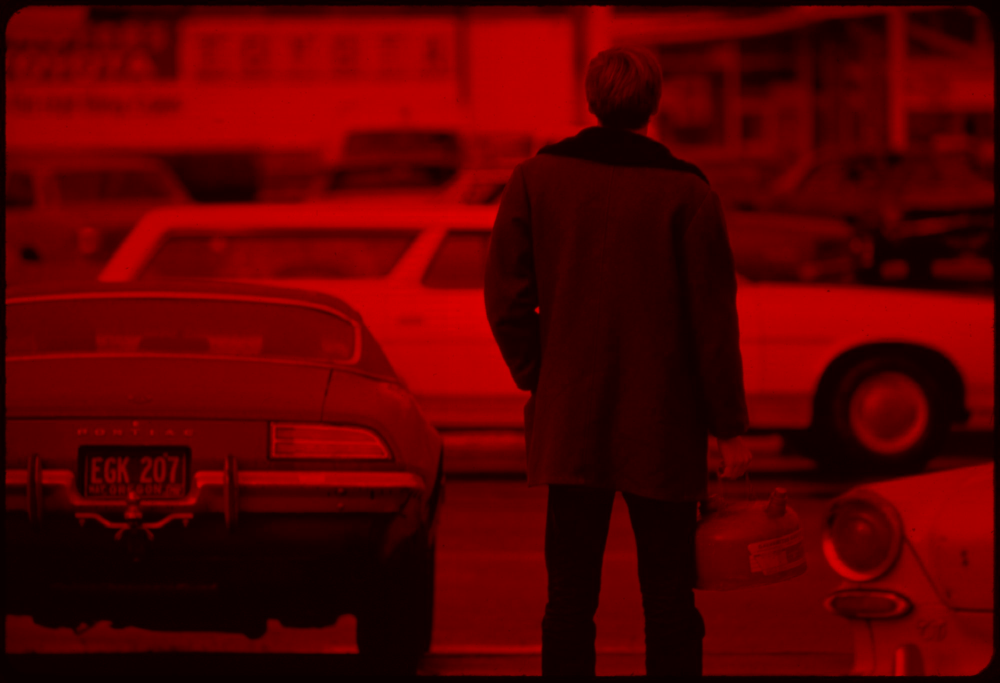

Installing missing packages: pillow, opencv-python, scikit-learn
Install complete. Please restart the kernel before continuing.Image Analysis Workshop: Computer Vision for Social Science Research
Python
image analysis
computer vision
This workshop notebook introduces practical image analysis for social science research, including manual preprocessing, similarity and clustering (BoVW), deep learning embeddings (CNN and ViT), classification, object detection, OCR, and image captioning with the Documerica dataset.
Setup
This notebook can automatically install missing packages.
If anything installs, restart the kernel before continuing. After restart, run the setup cell once more to confirm everything is ready.
Show the code
# Load the necessary libraries
import os
from pathlib import Path
import warnings
import numpy as np
import pandas as pd
import matplotlib.pyplot as plt
import matplotlib.patches as patches
import PIL.Image as Image
from PIL import ImageDraw, ImageOps, ImageFilter
import cv2
import plotly.express as px
import plotly.graph_objects as go
import textwrap
from sklearn.cluster import MiniBatchKMeans, KMeans
from sklearn.metrics.pairwise import cosine_similarity
from sklearn.decomposition import PCA
from sklearn.neighbors import NearestNeighbors
from sklearn.model_selection import train_test_split
from sklearn.preprocessing import LabelEncoder
from sklearn.linear_model import LogisticRegression
from sklearn.metrics import accuracy_score, f1_score, ConfusionMatrixDisplay
from sklearn.multiclass import OneVsRestClassifier
from ultralytics import YOLO
import easyocr
import torch
from torchvision import transforms
from torchvision.models import resnet18, ResNet18_Weights
from torchvision.models.feature_extraction import create_feature_extractor
from torchvision.transforms import functional as TF
warnings.filterwarnings("ignore", message=".*pin_memory.*")Creating new Ultralytics Settings v0.0.6 file
View Ultralytics Settings with 'yolo settings' or at 'C:\Users\alexr\AppData\Roaming\Ultralytics\settings.json'
Update Settings with 'yolo settings key=value', i.e. 'yolo settings runs_dir=path/to/dir'. For help see https://docs.ultralytics.com/quickstart/#ultralytics-settings.This notebook uses a subset of the Documerica dataset, a 1970s EPA photo archive documenting environmental conditions across the United States.
The subset includes: 1. Images: JPG files in data/documerica_subset. 2. Metadata: data/subset_documerica_metadata_labeled.csv with fields such as: - nid: unique image identifier - title: short description of scene context - Photographer: photographer name - date: capture date - place_name: location name - coordinates: latitude/longitude - category: a descriptive label generated by a large language model from photo titles (e.g., Pollution and Environmental Damage, Urban Landscape, Transportation and Infrastructure, etc.)
We will connect pixel-level patterns to metadata-level context through progressively more automated analysis.
Show the code
IMAGE_DIR = "data/documerica_subset"
# Load relabeled metadata
meta_df = pd.read_csv("data/subset_documerica_metadata_labeled.csv")
# Display the information about the metadata
print(meta_df.info())
print("\nCategory counts:")
print(meta_df["category"].value_counts())<class 'pandas.core.frame.DataFrame'>
RangeIndex: 197 entries, 0 to 196
Data columns (total 15 columns):
# Column Non-Null Count Dtype
--- ------ -------------- -----
0 nid 197 non-null int64
1 date 196 non-null object
2 title 197 non-null object
3 agency_id 196 non-null object
4 nail_num 197 non-null object
5 img_url 197 non-null object
6 img_path 197 non-null object
7 photographer 190 non-null object
8 photographer_desc 160 non-null object
9 birth_year 128 non-null float64
10 death_year 39 non-null float64
11 id 184 non-null float64
12 place_name 184 non-null object
13 coordinates 184 non-null object
14 category 197 non-null object
dtypes: float64(3), int64(1), object(11)
memory usage: 23.2+ KB
None
Category counts:
category
Urban Landscape 112
Industrial Site 30
People and Community 23
Rural Landscape 12
Pollution and Environmental Damage 11
Transportation and Infrastructure 7
Nature and Wildlife 2
Name: count, dtype: int64Show the code
# Show unique labels of the dataset
meta_df['category'].unique()array(['People and Community', 'Urban Landscape', 'Industrial Site', 'Pollution and Environmental Damage', 'Nature and Wildlife', 'Rural Landscape', 'Transportation and Infrastructure'], dtype=object)1. Manual Image Transformations
This section builds intuition for how simple operations change the visual signal before moving to automated methods.
Show the code
# Load an image and display it
sample_nid = 550128
sample_image_path = os.path.join(IMAGE_DIR, f"{sample_nid}.jpg")
sample_image = Image.open(sample_image_path)
# Display the image and its title
plt.figure(figsize=(8, 4))
plt.imshow(sample_image)
# Filter for the row with the specific nid
record = meta_df[meta_df['nid'] == sample_nid]
plt.title(textwrap.fill(record['title'].values[0], width=50))
plt.axis('off')
plt.show(){kind=link}
1.1 Color Channels and Pixel Distributions
Channel balance and intensity histograms help explain color composition in the scene.
Show the code
# Color histogram of the image
sample_img_rgb = np.array(sample_image)
color = ('r', 'g', 'b')
plt.figure(figsize=(8, 4))
for i, col in enumerate(color):
histogram = cv2.calcHist([sample_img_rgb], [i], None, [256], [0, 256])
plt.plot(histogram, color=col)
plt.xlim([0, 256])
plt.title("Color Histogram")
plt.xlabel("Pixel Intensity")
plt.ylabel("Frequency")
plt.show(){kind=link}
Show the code
# Different color channels of the image
channels = cv2.split(sample_img_rgb) # Splits into R, G, B components
zeros = np.zeros_like(channels[0])
plt.figure(figsize=(8, 12))
for i, col in enumerate(color):
plt.subplot(3, 1, i + 1)
channel_image_components = [zeros, zeros, zeros]
channel_image_components[i] = channels[i]
# Merge these components back into an RGB image
colored_channel_img = cv2.merge(channel_image_components)
plt.imshow(colored_channel_img)
plt.title(f"{col.upper()} Channel")
plt.axis('off')
plt.show(){kind=link}
Below is a GIF showing how separate color channels combine into a full-color image:

RGB channels carry complementary information, and recombining them restores scene detail.
1.2 Convolution, Filtering, and Edges
Filters emphasize different structures (texture, boundaries, or contrast) that later support feature extraction.
Show the code
# Apply the identity filter to the image
identity_kernel = np.array([[0, 0, 0],
[0, 1, 0],
[0, 0, 0]])
identity_image = cv2.filter2D(sample_img_rgb, -1, identity_kernel)
# Apply sharpening filter to the image
sharpening_kernel = np.array([[0, -1, 0],
[-1, 5, -1],
[0, -1, 0]])
sharpened_image = cv2.filter2D(sample_img_rgb, -1, sharpening_kernel)
# Apply the Gaussian blur to the image
blurred_image = cv2.GaussianBlur(sample_img_rgb, (5, 5), 0)
# Display the original and sharpened images
fig, axes = plt.subplots(2, 2, figsize=(10, 8))
axes[0, 0].imshow(sample_image)
axes[0, 0].set_title("Original Image")
axes[0, 1].imshow(identity_image)
axes[0, 1].set_title("Identity Filtered Image")
axes[1, 0].imshow(sharpened_image)
axes[1, 0].set_title("Sharpened Image")
axes[1, 1].imshow(blurred_image)
axes[1, 1].set_title("Gaussian Blurred Image")
for ax in axes.flatten():
ax.axis('off')
plt.tight_layout()
plt.show(){kind=link}
Show the code
# Apply the Canny edge detection algorithm to the sharpened image
gray = cv2.cvtColor(sample_img_rgb, cv2.COLOR_RGB2GRAY)
# Apply sharpening to the grayscale image
gray_sharpened = cv2.filter2D(gray, -1, sharpening_kernel)
edges = cv2.Canny(gray_sharpened, 100, 200)
# Apply the sobel edge detection algorithm to the sharpened image
sobelx = cv2.Sobel(gray_sharpened, cv2.CV_64F, 1, 0, ksize=5) # Sobel X
sobely = cv2.Sobel(gray_sharpened, cv2.CV_64F, 0, 1, ksize=5) # Sobel Y
sobel_edges = cv2.magnitude(sobelx, sobely) # Combine X and Y edges
# Display the edges
plt.figure(figsize=(8, 6))
plt.subplot(1, 2, 1)
plt.imshow(edges, cmap='gray')
plt.title("Canny Edges")
plt.axis('off')
plt.subplot(1, 2, 2)
plt.imshow(sobel_edges, cmap='gray')
plt.title("Sobel Edges")
plt.axis('off')
plt.tight_layout()
plt.show(){kind=link}
Show the code
# Absolute thresholding to create a binary image
absolute_threshold = 80
_, binary_image = cv2.threshold(gray_sharpened, absolute_threshold, 255, cv2.THRESH_BINARY)
# Display the binary image
fig, ax = plt.subplots(1, 2, figsize=(10, 5))
ax[0].imshow(gray_sharpened, cmap='gray')
ax[0].set_title("Sharpened Grayscale Image")
ax[0].axis('off')
ax[1].imshow(binary_image, cmap='gray')
ax[1].set_title("Binary Image (Thresholded)")
ax[1].axis('off')
plt.tight_layout()
plt.show(){kind=link}
1.3 Geometric Augmentation and Region-Based Focus
Geometric transforms and masking reveal which visual changes preserve or distort useful structure.
Common augmentations include resizing, rotation, flipping, and filtering to simulate variation while preserving core scene content.
Show the code
# A few geometric transformations to see how image structure changes
cropped_img = sample_img_rgb[500:1500, 1000:2000] # Crop the image to a specific region
resized_img = cv2.resize(sample_img_rgb, None, fx=0.05, fy=0.05, interpolation=cv2.INTER_AREA)
rotated_img = cv2.rotate(sample_img_rgb, cv2.ROTATE_90_CLOCKWISE)
flipped_img = cv2.flip(sample_img_rgb, 1) # 1 = horizontal flip
# Show transformed images side by side so the differences are easy to spot
fig, ax = plt.subplots(2, 2, figsize=(10, 6))
ax[0, 0].imshow(cropped_img)
ax[0, 0].set_title("Cropped Image")
ax[0, 0].axis("off")
ax[0, 1].imshow(resized_img)
ax[0, 1].set_title("Resized (5% scale)")
ax[0, 1].axis("off")
ax[1, 0].imshow(rotated_img)
ax[1, 0].set_title("Rotated 90° clockwise")
ax[1, 0].axis("off")
ax[1, 1].imshow(flipped_img)
ax[1, 1].set_title("Flipped horizontally")
ax[1, 1].axis("off")
plt.suptitle("Geometric Transformations", fontsize=14)
plt.tight_layout()
plt.show(){kind=link}
Beyond cropping, masking lets you isolate a region of interest and hide everything else.
This technique is common in object localization, segmentation, and document cleanup. It focuses computation on the pixels that matter most.
Show the code
# Apply an irregular polygonal mask to the image
mask = np.zeros(sample_img_rgb.shape[:2], dtype="uint8")
(cX, cY) = (sample_img_rgb.shape[1] // 2, sample_img_rgb.shape[0] // 2)
# Create an irregular shape using points
pts = np.array([[cX - 400, cY - 400], [cX + 400, cY - 600],
[cX + 600, cY + 200], [cX, cY + 800],
[cX - 600, cY + 200]], np.int32)
pts = pts.reshape((-1, 1, 2))
cv2.fillPoly(mask, [pts], 255)
# Apply the mask
masked = cv2.bitwise_and(sample_img_rgb, sample_img_rgb, mask=mask)
# Display the mask and the masked image
plt.figure(figsize=(10, 5))
plt.subplot(1, 2, 1)
plt.imshow(mask, cmap='gray')
plt.title("Mask")
plt.axis('off')
plt.subplot(1, 2, 2)
plt.imshow(masked)
plt.title("Masked Image")
plt.axis('off')
plt.show(){kind=link}
Show the code
# Better thresholding for edge detection: blur -> contrast boost -> threshold
def process_image_pipeline(image):
gray = cv2.cvtColor(image, cv2.COLOR_RGB2GRAY)
blurred = cv2.GaussianBlur(gray, (5, 5), 0)
high_contrast = cv2.convertScaleAbs(blurred, alpha=1.6, beta=10)
binary = cv2.adaptiveThreshold(
high_contrast, 255, cv2.ADAPTIVE_THRESH_GAUSSIAN_C,
cv2.THRESH_BINARY, 21, 4
)
return gray, blurred, high_contrast, binary
# Apply the pipeline to the sample image
gray, blurred, high_contrast, binary = process_image_pipeline(sample_img_rgb)
fig, ax = plt.subplots(2, 2, figsize=(8, 7))
ax[0, 0].imshow(gray, cmap="gray")
ax[0, 0].set_title("1) Grayscale")
ax[0, 0].axis("off")
ax[0, 1].imshow(blurred, cmap="gray")
ax[0, 1].set_title("2) Gentle blur")
ax[0, 1].axis("off")
ax[1, 0].imshow(high_contrast, cmap="gray")
ax[1, 0].set_title("3) Contrast boosted")
ax[1, 0].axis("off")
ax[1, 1].imshow(binary, cmap="gray")
ax[1, 1].set_title("4) Adaptive threshold")
ax[1, 1].axis("off")
plt.suptitle("Simple Image Processing Pipeline", fontsize=14)
plt.tight_layout()
plt.show(){kind=link}
The pipeline above is good for general structure analysis. But sometimes you want something more specific: reading the text visible in one part of an image.
Below, we manually crop, upscale, and threshold a small region to make its text legible. This shows how much hand-tuning is required when you do it without automation. In Section 4.3, we replace this manual workflow with EasyOCR, which detects and transcribes text regions across the full image automatically.
Show the code
# Coordinates found by inspection: y=150:450, x=2400:2600
roi = sample_img_rgb[150:400, 2400:2600]
# Upscale the image to make the text larger
scale_factor = 4
width = int(roi.shape[1] * scale_factor)
height = int(roi.shape[0] * scale_factor)
upscaled = cv2.resize(roi, (width, height), interpolation=cv2.INTER_CUBIC)
# Enhance readability using image processing
# Convert to grayscale
gray_roi = cv2.cvtColor(upscaled, cv2.COLOR_RGB2GRAY)
# Apply a stronger blur to remove more noise before thresholding
blurred_roi = cv2.GaussianBlur(gray_roi, (5, 5), 0)
# Apply an absolute threshold to highlight the text
threshold_value = 101
binary_text = cv2.threshold(blurred_roi, threshold_value, 255, cv2.THRESH_BINARY)[1]
# Display the steps
fig, ax = plt.subplots(1, 4, figsize=(10, 3))
ax[0].imshow(roi)
ax[0].set_title("1. Original Crop")
ax[0].axis("off")
ax[1].imshow(upscaled)
ax[1].set_title(f"2. Upscaled ({scale_factor}x)")
ax[1].axis("off")
ax[2].imshow(gray_roi, cmap='gray')
ax[2].set_title("3. Grayscale")
ax[2].axis("off")
ax[3].imshow(binary_text, cmap='gray')
ax[3].set_title("4. Absolute Thresholding")
ax[3].axis("off")
plt.tight_layout()
plt.show(){kind=link}
2. Automating Analysis with Similarity and Clustering
Now we move from manual operations to automated comparison. Each image becomes a numeric vector, and cosine similarity measures how close any two images are in that feature space.
This turns visual judgment into a repeatable, quantitative workflow. We start by building a small working corpus, then run similarity and clustering on top.
Show the code
# Sample a random batch of images to analyze (random selection gives a more representative view)
max_images = 50
demo_df = meta_df.sample(n=min(max_images, len(meta_df)), random_state=123).reset_index(drop=True)
# Add full file path for easy loading
demo_df["img_path"] = demo_df["nid"].astype(int).astype(str) + ".jpg"
demo_df["full_path"] = demo_df["img_path"].apply(lambda p: os.path.join(IMAGE_DIR, p))
# Show how categories are distributed in this batch
category_counts = demo_df['category'].value_counts()
print("Category distribution in the sampled batch:")
print(category_counts)Category distribution in the sampled batch:
category
Urban Landscape 22
Industrial Site 9
Rural Landscape 6
People and Community 6
Transportation and Infrastructure 4
Pollution and Environmental Damage 3
Name: count, dtype: int642.1 Extracting Visual Word Features
Before extracting keypoints, images are preprocessed (equalizing contrast, blurring noise, and standardizing intensity) to produce more stable features and a cleaner similarity structure. These embeddings were pre-computed for the workshop.
Generating embeddings for a large image collection is slow and computationally expensive. For this workshop, the embeddings were pre-computed and saved to disk so that we can load them instantly and focus on analysis.
Show the code
# Load saved BoVW embeddings and metadata
bovw_features = np.load("data/embeddings/bovw_sift_embeddings.npy")
bovw_meta_df = pd.read_csv("data/embeddings/bovw_sift_embedding_metadata.csv")
demo_df = bovw_meta_df.copy()
demo_df["img_path"] = demo_df["nid"].astype(int).astype(str) + ".jpg"
print("Loaded BoVW embeddings:", bovw_features.shape)
print("Loaded BoVW metadata:", bovw_meta_df.shape)Loaded BoVW embeddings: (50, 60)
Loaded BoVW metadata: (50, 4)2.2 Measuring Similarity
BoVW gives each image a shared visual vocabulary, so similarity scores become directly comparable across the corpus.
Show the code
# Pick one target image and find nearest neighbors using cosine similarity.
target_idx = 0 # Use the first image in this demo batch as the anchor.
sim_scores = cosine_similarity(bovw_features[target_idx:target_idx + 1], bovw_features).ravel()
top_k = min(6, len(sim_scores))
top_idx = np.argsort(sim_scores)[::-1][:top_k]
print("Top similar images (including self):")
for rank, idx in enumerate(top_idx, start=1):
nid_val = int(demo_df.loc[idx, "nid"])
title_val = str(demo_df.loc[idx, "title"])
print(f"{rank}. nid={nid_val} | score={sim_scores[idx]:.3f} | {title_val[:90]}")Top similar images (including self):
1. nid=556086 | score=1.000 | FIREMAN, LEFT, AND ENGINEER IN THE CAB OF THE EMPIRE BUILDER PASSENGER TRAIN AS IT HEADS W
2. nid=546632 | score=0.969 | MECHANICS AT WORK AT "CALL CARL," COMPUTERIZED CENTER
3. nid=547381 | score=0.968 | AUCTIONEER DOES BRISK BUSINESS AT THE HICKMAN SATURDAY AUCTION, 15 MILES SOUTH OF LINCOLN
4. nid=556874 | score=0.962 | SOUTHERN RAILWAY RIGHT-OF-WAY WORKER, WORKING WITH A MACHINE THAT AIDS IN REPLACING OLD TR
5. nid=556916 | score=0.954 | AERIAL VIEW LOOKING SOUTHWEST OF THE NORTH END OF THE BANGOR ANNEX NAVY INSTALLATION. PRIV
6. nid=552806 | score=0.953 | IN THE SPRING OF 1973 THE MISSISSIPPI RIVER REACHED ITS HIGHEST LEVEL IN MORE THAN 150 YEAShow the code
# Visual check by displaying the top 4 matches
show_idx = top_idx[:4]
fig, axes = plt.subplots(2, 2, figsize=(8, 6))
axes = axes.flatten()
for ax_i, idx in zip(axes, show_idx):
img = Image.open(demo_df.loc[idx, "full_path"])
ax_i.imshow(img)
ax_i.set_title(f"nid {int(demo_df.loc[idx, 'nid'])}\nscore {sim_scores[idx]:.2f}")
ax_i.axis("off")
plt.suptitle("Most Similar Images by BoVW Cosine Similarity", fontsize=13)
plt.tight_layout()
plt.show(){kind=link}
A higher cosine similarity means stronger overlap in local texture and structure under the BoVW representation.
Clustering complements similarity: instead of comparing pairs, it groups images by shared visual patterns without any labels. Together, they give both pairwise and corpus-level views of the collection.
Show the code
# Cluster BoVW features into 3 groups and visualize in 2D
n_clusters = 3
cluster_model = KMeans(n_clusters=n_clusters, random_state=42, n_init=10)
cluster_labels = cluster_model.fit_predict(bovw_features)
demo_df["cluster"] = cluster_labels
# Compute the PCA
pca = PCA(n_components=2, random_state=42)
xy = pca.fit_transform(bovw_features)
# Create a DataFrame for visualization
clustering_visualization_df = pd.DataFrame({
"PCA 1": xy[:, 0],
"PCA 2": xy[:, 1],
"Cluster": cluster_labels.astype(str), # Convert to string for discrete colors
"Title": demo_df["title"].apply(lambda t: textwrap.fill(str(t).lower(),
width=50).replace('\n', '<br>')),
"Image ID": demo_df["img_path"],
"Category": demo_df["category"].str.lower()
})
# Create an interactive scatter plot
fig = px.scatter(
clustering_visualization_df,
x="PCA 1",
y="PCA 2",
color="Cluster",
hover_data={
"Title": True,
"Image ID": True,
"Category": True,
"PCA 1": False,
"PCA 2": False,
"Cluster": True
},
title="BoVW Image Clusters (PCA view)",
color_discrete_sequence=px.colors.qualitative.G10, # A high-contrast palette
width=800, height=600
)
fig.update_traces(marker=dict(size=12, line=dict(width=1, color='DarkSlateGrey')))
fig.show()
print("Cluster sizes:")
print(demo_df["cluster"].value_counts().sort_index())Cluster sizes:
cluster
0 34
1 11
2 5
Name: count, dtype: int64Show the code
# Display 2 images from each cluster to see if they share visual themes
for cluster_id in sorted(np.unique(cluster_labels)):
cluster_images = demo_df[demo_df["cluster"] == cluster_id].head(2)
fig, axes = plt.subplots(1, 2, figsize=(8, 4))
for ax_i, (_, row) in zip(axes, cluster_images.iterrows()):
img = Image.open(row["full_path"])
ax_i.imshow(img)
ax_i.set_title(f"Cluster {cluster_id} | nid {int(row['nid'])}")
ax_i.axis("off")
plt.suptitle(f"Sample Images from Cluster {cluster_id}", fontsize=13)
plt.tight_layout()
plt.show(){kind=link}
{kind=link}
{kind=link}
Reflection: which visual cues (edges, textures, layouts, or contrast patterns) likely drove these images into the same cluster?
3. Deep Learning: Convolutional Neural Networks and Vision Transformers
Now we move from handcrafted BoVW features to learned image embeddings.
BoVW captures local texture patterns. CNNs and ViTs learn richer semantic representations, which are often better for retrieval and classification.
3.1 CNN Embeddings
A CNN learns visual patterns layer by layer: - Early layers detect edges and textures. - Middle layers combine them into parts and shapes. - Deeper layers capture objects and scene meaning.
We use a pretrained ResNet-18 and take its final pooled feature vector as the image embedding.

Show the code
# Set up direct file paths in meta_df so we can open images easily in later steps
meta_df["img_path"] = meta_df["nid"].astype(int).astype(str) + ".jpg"
meta_df["full_path"] = meta_df["img_path"].apply(lambda p: os.path.join(IMAGE_DIR, p))Show the code
# Load a pretrained CNN and define small helper utilities
# Use CPU by default so this runs anywhere, but switch to GPU if available.
device = torch.device("cuda" if torch.cuda.is_available() else "cpu")
print(f"Using device: {device}")
# A compact image size keeps full-dataset embedding fast.
IMG_SIZE = 160
BATCH_SIZE = 32
weights = ResNet18_Weights.DEFAULT
cnn_model = resnet18(weights=weights).to(device).eval()
preprocess = transforms.Compose([
transforms.Resize((IMG_SIZE, IMG_SIZE)),
transforms.ToTensor(),
transforms.Normalize(mean=weights.transforms().mean, std=weights.transforms().std),
])
# We tap into multiple ResNet stages for visualization, and avgpool for final embedding.
feature_extractor = create_feature_extractor(
cnn_model,
return_nodes={
"layer1": "layer1",
"layer2": "layer2",
"layer3": "layer3",
"layer4": "layer4",
"avgpool": "embedding",
},
).to(device).eval()
print(f"Loaded model: {type(cnn_model).__name__}")Using device: cpu
Downloading: "https://download.pytorch.org/models/resnet18-f37072fd.pth" to C:\Users\alexr/.cache\torch\hub\checkpoints\resnet18-f37072fd.pth 0%| | 0.00/44.7M [00:00<?, ?B/s] 2%|▏ | 896k/44.7M [00:00<00:06, 7.54MB/s] 4%|▍ | 1.75M/44.7M [00:00<00:05, 7.81MB/s] 6%|▌ | 2.50M/44.7M [00:00<00:05, 7.60MB/s] 7%|▋ | 3.25M/44.7M [00:00<00:05, 7.52MB/s] 9%|▉ | 4.00M/44.7M [00:00<00:05, 7.47MB/s] 11%|█ | 4.75M/44.7M [00:00<00:05, 7.43MB/s] 12%|█▏ | 5.50M/44.7M [00:00<00:05, 7.42MB/s] 14%|█▍ | 6.25M/44.7M [00:00<00:05, 7.41MB/s] 16%|█▌ | 7.00M/44.7M [00:00<00:05, 7.40MB/s] 17%|█▋ | 7.75M/44.7M [00:01<00:05, 7.40MB/s] 19%|█▉ | 8.50M/44.7M [00:01<00:05, 7.38MB/s] 21%|██ | 9.25M/44.7M [00:01<00:05, 7.38MB/s] 22%|██▏ | 10.0M/44.7M [00:01<00:04, 7.38MB/s] 24%|██▍ | 10.8M/44.7M [00:01<00:04, 7.38MB/s] 26%|██▌ | 11.5M/44.7M [00:01<00:04, 7.38MB/s] 27%|██▋ | 12.2M/44.7M [00:01<00:04, 7.38MB/s] 29%|██▉ | 13.0M/44.7M [00:01<00:04, 7.36MB/s] 31%|███ | 13.8M/44.7M [00:01<00:04, 7.32MB/s] 32%|███▏ | 14.5M/44.7M [00:02<00:04, 7.35MB/s] 34%|███▍ | 15.2M/44.7M [00:02<00:04, 7.35MB/s] 36%|███▌ | 16.0M/44.7M [00:02<00:04, 7.30MB/s] 38%|███▊ | 16.8M/44.7M [00:02<00:04, 7.29MB/s] 39%|███▉ | 17.5M/44.7M [00:02<00:03, 7.33MB/s] 41%|████ | 18.2M/44.7M [00:02<00:03, 7.34MB/s] 43%|████▎ | 19.0M/44.7M [00:02<00:03, 7.36MB/s] 44%|████▍ | 19.8M/44.7M [00:02<00:03, 7.35MB/s] 46%|████▌ | 20.5M/44.7M [00:02<00:03, 7.37MB/s] 48%|████▊ | 21.2M/44.7M [00:03<00:03, 7.32MB/s] 49%|████▉ | 22.0M/44.7M [00:03<00:03, 7.34MB/s] 51%|█████ | 22.8M/44.7M [00:03<00:03, 7.35MB/s] 53%|█████▎ | 23.5M/44.7M [00:03<00:03, 7.37MB/s] 54%|█████▍ | 24.2M/44.7M [00:03<00:02, 7.37MB/s] 56%|█████▌ | 25.0M/44.7M [00:03<00:02, 7.37MB/s] 58%|█████▊ | 25.8M/44.7M [00:03<00:02, 7.38MB/s] 59%|█████▉ | 26.5M/44.7M [00:03<00:02, 7.38MB/s] 61%|██████ | 27.2M/44.7M [00:03<00:02, 7.36MB/s] 63%|██████▎ | 28.0M/44.7M [00:03<00:02, 7.34MB/s] 64%|██████▍ | 28.8M/44.7M [00:04<00:02, 7.34MB/s] 66%|██████▌ | 29.5M/44.7M [00:04<00:02, 7.34MB/s] 68%|██████▊ | 30.2M/44.7M [00:04<00:02, 7.36MB/s] 69%|██████▉ | 31.0M/44.7M [00:04<00:01, 7.37MB/s] 71%|███████ | 31.8M/44.7M [00:04<00:01, 7.37MB/s] 73%|███████▎ | 32.5M/44.7M [00:04<00:01, 7.38MB/s] 74%|███████▍ | 33.2M/44.7M [00:04<00:01, 7.39MB/s] 76%|███████▌ | 34.0M/44.7M [00:04<00:01, 7.38MB/s] 78%|███████▊ | 34.8M/44.7M [00:04<00:01, 7.38MB/s] 79%|███████▉ | 35.5M/44.7M [00:05<00:01, 7.39MB/s] 81%|████████ | 36.2M/44.7M [00:05<00:01, 7.39MB/s] 83%|████████▎ | 37.0M/44.7M [00:05<00:01, 7.38MB/s] 85%|████████▍ | 37.8M/44.7M [00:05<00:00, 7.39MB/s] 86%|████████▌ | 38.5M/44.7M [00:05<00:00, 7.40MB/s] 88%|████████▊ | 39.2M/44.7M [00:05<00:00, 7.40MB/s] 90%|████████▉ | 40.0M/44.7M [00:05<00:00, 7.39MB/s] 91%|█████████ | 40.8M/44.7M [00:05<00:00, 7.39MB/s] 93%|█████████▎| 41.5M/44.7M [00:05<00:00, 7.39MB/s] 95%|█████████▍| 42.2M/44.7M [00:06<00:00, 7.39MB/s] 96%|█████████▋| 43.0M/44.7M [00:06<00:00, 7.39MB/s] 98%|█████████▊| 43.8M/44.7M [00:06<00:00, 7.39MB/s]100%|█████████▉| 44.5M/44.7M [00:06<00:00, 7.39MB/s]100%|██████████| 44.7M/44.7M [00:06<00:00, 7.38MB/s]Loaded model: ResNetWe begin by transforming one image as an example:
Show the code
# Show one image and feature maps from different convolution stages
sample_idx = 0
sample_path = demo_df.loc[sample_idx, "full_path"]
sample_title = textwrap.fill(demo_df.loc[sample_idx, "title"], width=60)
img_pil = Image.open(sample_path).convert("RGB")
img_tensor = preprocess(img_pil).unsqueeze(0).to(device)
with torch.no_grad():
fmap_outputs = feature_extractor(img_tensor)
# Display original image
plt.figure(figsize=(4, 4))
plt.imshow(img_pil)
plt.title(f"Sample image\n{sample_title[:60]}")
plt.axis("off")
plt.show(){kind=link}
Feature maps show what the CNN focuses on at each depth: - Early maps highlight edges and fine textures. - Middle maps focus on repeated structures and parts. - Deep maps respond to higher-level semantics.
This helps explain how a CNN builds understanding from pixels to meaning.
Show the code
# Show first channel from each stage to keep the view simple and readable
layers_to_show = ["layer1", "layer2", "layer3", "layer4"]
fig, axes = plt.subplots(1, len(layers_to_show), figsize=(10, 3))
for ax, layer_name in zip(axes, layers_to_show):
fmap = fmap_outputs[layer_name][0, 0].detach().cpu().numpy() # [H, W] for one channel
ax.imshow(fmap, cmap="viridis")
ax.set_title(f"{layer_name}\n{fmap.shape}")
ax.axis("off")
plt.suptitle("Feature maps across CNN depth (first channel per block)", y=1.05)
plt.tight_layout()
plt.show(){kind=link}
We can see clearly that early layers preserve more local textures and edges, while deeper layers become more abstract and semantic. This is why CNN embeddings often group images by meaning, not just raw pixels.
Saving embeddings alongside metadata keeps the workflow modular. We can reuse CNN features for classification, retrieval, and ViT comparisons without recomputing.
Show the code
# Load saved CNN embeddings and metadata
all_embeddings = np.load("data/embeddings/cnn_resnet18_embeddings.npy")
cnn_meta_df = pd.read_csv("data/embeddings/cnn_resnet18_embedding_metadata.csv")
# Minimal alignment fields used later
meta_df["cnn_valid"] = True
meta_df["cnn_emb_idx"] = np.arange(len(meta_df))
print("Loaded CNN embeddings:", all_embeddings.shape)
print("Loaded CNN metadata:", cnn_meta_df.shape)Loaded CNN embeddings: (197, 512)
Loaded CNN metadata: (197, 6)A single embedding is just a numeric fingerprint of an image.
The embedding of each image exists as a list of numbers, with each number representing a feature of the image. For the model we used, there are 512 dimensions for each image.
Show the code
# Peek at what embeddings look like
print("Embedding matrix:", all_embeddings.shape)
print("One embedding (first 50 dimensions):")
print(np.round(all_embeddings[0, :50], 4))Embedding matrix: (197, 512)
One embedding (first 50 dimensions):
[ 0.0322 3.8814 1.5009 0.5262 1.5885 0.6313 2.0569 1.5281 1.4761 1.1877 2.667 0.81 0.0576 0.4404 2.0375 0.6879 0.2922 0.6384 0.8566 1.6851 0 0.3846 0.4314 2.1512 2.5046 0.102
0.538 3.1172 0.0655 2.3766 3.1108 0.9091 0.3246 0.2546 0.41 1.1546 1.7438 1.3666 0.4784 2.4637 1.0099 0.9566 0 0.0213 0.9301 2.24 0.6773 1.064 1.8874 0.9562]Show the code
# Quick projection to 2D for visual intuition
pca_preview = PCA(n_components=2, random_state=123)
xy_preview = pca_preview.fit_transform(all_embeddings)
# Create a DataFrame for visualization
pca_preview_df = pd.DataFrame({
"PC1": xy_preview[:, 0],
"PC2": xy_preview[:, 1],
"Category": meta_df["category"].str.lower(),
"Title": meta_df["title"].apply(lambda t: textwrap.fill(str(t).lower(),
width=50).replace('\n', '<br>')),
"Image ID": meta_df["img_path"]
})
# Create an interactive scatter plot
fig = px.scatter(
pca_preview_df,
x="PC1",
y="PC2",
color="Category",
hover_data={
"Title": True,
"Image ID": True,
"PC1": False,
"PC2": False,
"Category": True
},
title="CNN Embeddings Projected to 2D (PCA)",
color_discrete_sequence=px.colors.qualitative.G10, # A high-contrast palette
width=800, height=600
)
fig.update_traces(marker=dict(size=12, line=dict(width=1, color='DarkSlateGrey')))
fig.show()3.2 ViT Embeddings
Now we run the same workflow with a Vision Transformer (ViT).
CNNs process local neighborhoods; ViTs split images into patches and model global relationships through self-attention. This often helps capture broader scene context.
Show the code
# Load a pretrained ViT and set up helpers
from torchvision.models import vit_b_16, ViT_B_16_Weights
vit_weights = ViT_B_16_Weights.DEFAULT
vit_model = vit_b_16(weights=vit_weights).to(device).eval()
vit_preprocess = vit_weights.transforms()
# If this cell is rerun, remove old hooks
if "vit_hook_handles" in globals():
for handle in vit_hook_handles:
handle.remove()
# Capture hidden states from a few transformer blocks for visualization.
vit_block_outputs = {}
vit_hook_handles = []
block_indices_to_capture = [0, 5, 11]
for idx in block_indices_to_capture:
handle = vit_model.encoder.layers[idx].register_forward_hook(
lambda module, inputs, output, idx=idx: vit_block_outputs.__setitem__(f"block_{idx+1}", output.detach())
)
vit_hook_handles.append(handle)Downloading: "https://download.pytorch.org/models/vit_b_16-c867db91.pth" to C:\Users\alexr/.cache\torch\hub\checkpoints\vit_b_16-c867db91.pth 0%| | 0.00/330M [00:00<?, ?B/s] 0%| | 896k/330M [00:00<00:47, 7.34MB/s] 1%| | 1.75M/330M [00:00<00:43, 7.85MB/s] 1%| | 2.62M/330M [00:00<00:45, 7.63MB/s] 1%| | 3.38M/330M [00:00<00:45, 7.54MB/s] 1%| | 4.12M/330M [00:00<00:45, 7.49MB/s] 1%|▏ | 4.88M/330M [00:00<00:45, 7.46MB/s] 2%|▏ | 5.62M/330M [00:00<00:45, 7.44MB/s] 2%|▏ | 6.38M/330M [00:00<00:45, 7.42MB/s] 2%|▏ | 7.12M/330M [00:00<00:45, 7.41MB/s] 2%|▏ | 7.88M/330M [00:01<00:45, 7.40MB/s] 3%|▎ | 8.62M/330M [00:01<00:45, 7.40MB/s] 3%|▎ | 9.38M/330M [00:01<00:45, 7.39MB/s] 3%|▎ | 10.1M/330M [00:01<00:45, 7.40MB/s] 3%|▎ | 10.9M/330M [00:01<00:45, 7.39MB/s] 4%|▎ | 11.6M/330M [00:01<00:45, 7.39MB/s] 4%|▎ | 12.4M/330M [00:01<00:45, 7.39MB/s] 4%|▍ | 13.1M/330M [00:01<00:45, 7.39MB/s] 4%|▍ | 13.9M/330M [00:01<00:44, 7.38MB/s] 4%|▍ | 14.6M/330M [00:02<00:44, 7.39MB/s] 5%|▍ | 15.4M/330M [00:02<00:44, 7.39MB/s] 5%|▍ | 16.1M/330M [00:02<00:44, 7.39MB/s] 5%|▌ | 16.9M/330M [00:02<00:44, 7.37MB/s] 5%|▌ | 17.6M/330M [00:02<00:44, 7.38MB/s] 6%|▌ | 18.4M/330M [00:02<00:44, 7.40MB/s] 6%|▌ | 19.1M/330M [00:02<00:44, 7.39MB/s] 6%|▌ | 19.9M/330M [00:02<00:44, 7.39MB/s] 6%|▌ | 20.6M/330M [00:02<00:43, 7.39MB/s] 6%|▋ | 21.4M/330M [00:03<00:43, 7.39MB/s] 7%|▋ | 22.1M/330M [00:03<00:43, 7.40MB/s] 7%|▋ | 22.9M/330M [00:03<00:43, 7.39MB/s] 7%|▋ | 23.6M/330M [00:03<00:43, 7.39MB/s] 7%|▋ | 24.4M/330M [00:03<00:43, 7.39MB/s] 8%|▊ | 25.1M/330M [00:03<00:43, 7.39MB/s] 8%|▊ | 25.9M/330M [00:03<00:43, 7.39MB/s] 8%|▊ | 26.6M/330M [00:03<00:43, 7.35MB/s] 8%|▊ | 27.4M/330M [00:03<00:43, 7.36MB/s] 9%|▊ | 28.1M/330M [00:03<00:43, 7.35MB/s] 9%|▊ | 28.9M/330M [00:04<00:42, 7.35MB/s] 9%|▉ | 29.6M/330M [00:04<00:42, 7.37MB/s] 9%|▉ | 30.4M/330M [00:04<00:42, 7.37MB/s] 9%|▉ | 31.1M/330M [00:04<00:42, 7.38MB/s] 10%|▉ | 31.9M/330M [00:04<00:42, 7.37MB/s] 10%|▉ | 32.6M/330M [00:04<00:42, 7.37MB/s] 10%|█ | 33.4M/330M [00:04<00:42, 7.39MB/s] 10%|█ | 34.1M/330M [00:04<00:42, 7.38MB/s] 11%|█ | 34.9M/330M [00:04<00:41, 7.38MB/s] 11%|█ | 35.6M/330M [00:05<00:41, 7.38MB/s] 11%|█ | 36.4M/330M [00:05<00:41, 7.39MB/s] 11%|█ | 37.1M/330M [00:05<00:41, 7.39MB/s] 11%|█▏ | 37.9M/330M [00:05<00:41, 7.39MB/s] 12%|█▏ | 38.6M/330M [00:05<00:41, 7.39MB/s] 12%|█▏ | 39.4M/330M [00:05<00:41, 7.39MB/s] 12%|█▏ | 40.1M/330M [00:05<00:41, 7.39MB/s] 12%|█▏ | 40.9M/330M [00:05<00:41, 7.39MB/s] 13%|█▎ | 41.6M/330M [00:05<00:40, 7.39MB/s] 13%|█▎ | 42.4M/330M [00:06<00:40, 7.39MB/s] 13%|█▎ | 43.1M/330M [00:06<00:40, 7.38MB/s] 13%|█▎ | 43.9M/330M [00:06<00:42, 7.11MB/s] 14%|█▎ | 44.8M/330M [00:06<00:40, 7.46MB/s] 14%|█▍ | 45.5M/330M [00:06<00:40, 7.44MB/s] 14%|█▍ | 46.2M/330M [00:06<00:40, 7.43MB/s] 14%|█▍ | 47.0M/330M [00:06<00:40, 7.41MB/s] 14%|█▍ | 47.8M/330M [00:06<00:40, 7.40MB/s] 15%|█▍ | 48.5M/330M [00:06<00:39, 7.40MB/s] 15%|█▍ | 49.2M/330M [00:06<00:39, 7.40MB/s] 15%|█▌ | 50.0M/330M [00:07<00:39, 7.40MB/s] 15%|█▌ | 50.8M/330M [00:07<00:39, 7.39MB/s] 16%|█▌ | 51.5M/330M [00:07<00:39, 7.39MB/s] 16%|█▌ | 52.2M/330M [00:07<00:39, 7.39MB/s] 16%|█▌ | 53.0M/330M [00:07<00:39, 7.40MB/s] 16%|█▋ | 53.8M/330M [00:07<00:39, 7.39MB/s] 17%|█▋ | 54.5M/330M [00:07<00:39, 7.39MB/s] 17%|█▋ | 55.2M/330M [00:07<00:39, 7.38MB/s] 17%|█▋ | 56.0M/330M [00:07<00:38, 7.39MB/s] 17%|█▋ | 56.8M/330M [00:08<00:38, 7.38MB/s] 17%|█▋ | 57.5M/330M [00:08<00:38, 7.39MB/s] 18%|█▊ | 58.2M/330M [00:08<00:38, 7.39MB/s] 18%|█▊ | 59.0M/330M [00:08<00:38, 7.39MB/s] 18%|█▊ | 59.8M/330M [00:08<00:38, 7.39MB/s] 18%|█▊ | 60.5M/330M [00:08<00:38, 7.37MB/s] 19%|█▊ | 61.2M/330M [00:08<00:38, 7.38MB/s] 19%|█▉ | 62.0M/330M [00:08<00:38, 7.38MB/s] 19%|█▉ | 62.8M/330M [00:08<00:37, 7.38MB/s] 19%|█▉ | 63.5M/330M [00:09<00:37, 7.39MB/s] 19%|█▉ | 64.2M/330M [00:09<00:37, 7.39MB/s] 20%|█▉ | 65.0M/330M [00:09<00:37, 7.38MB/s] 20%|█▉ | 65.8M/330M [00:09<00:37, 7.38MB/s] 20%|██ | 66.5M/330M [00:09<00:37, 7.39MB/s] 20%|██ | 67.2M/330M [00:09<00:37, 7.39MB/s] 21%|██ | 68.0M/330M [00:09<00:37, 7.40MB/s] 21%|██ | 68.8M/330M [00:09<00:37, 7.39MB/s] 21%|██ | 69.5M/330M [00:09<00:36, 7.39MB/s] 21%|██▏ | 70.2M/330M [00:09<00:36, 7.39MB/s] 21%|██▏ | 71.0M/330M [00:10<00:55, 4.93MB/s] 22%|██▏ | 71.8M/330M [00:10<00:49, 5.51MB/s] 22%|██▏ | 72.5M/330M [00:10<00:44, 6.04MB/s] 22%|██▏ | 73.2M/330M [00:10<00:41, 6.46MB/s] 22%|██▏ | 74.0M/330M [00:10<00:40, 6.71MB/s] 23%|██▎ | 74.8M/330M [00:10<00:40, 6.67MB/s] 23%|██▎ | 75.6M/330M [00:10<00:37, 7.13MB/s] 23%|██▎ | 76.4M/330M [00:10<00:37, 7.20MB/s] 23%|██▎ | 77.1M/330M [00:11<00:36, 7.25MB/s] 24%|██▎ | 77.9M/330M [00:11<00:36, 7.29MB/s] 24%|██▍ | 78.6M/330M [00:11<00:36, 7.31MB/s] 24%|██▍ | 79.4M/330M [00:11<00:35, 7.34MB/s] 24%|██▍ | 80.1M/330M [00:11<00:35, 7.36MB/s] 24%|██▍ | 80.9M/330M [00:11<00:35, 7.37MB/s] 25%|██▍ | 81.6M/330M [00:11<00:35, 7.38MB/s] 25%|██▍ | 82.4M/330M [00:11<00:35, 7.38MB/s] 25%|██▌ | 83.1M/330M [00:11<00:35, 7.38MB/s] 25%|██▌ | 83.9M/330M [00:12<00:34, 7.38MB/s] 26%|██▌ | 84.6M/330M [00:12<00:34, 7.39MB/s] 26%|██▌ | 85.4M/330M [00:12<00:34, 7.39MB/s] 26%|██▌ | 86.1M/330M [00:12<00:34, 7.39MB/s] 26%|██▋ | 86.9M/330M [00:12<00:34, 7.40MB/s] 27%|██▋ | 87.6M/330M [00:12<00:34, 7.39MB/s] 27%|██▋ | 88.4M/330M [00:12<00:34, 7.40MB/s] 27%|██▋ | 89.1M/330M [00:12<00:34, 7.38MB/s] 27%|██▋ | 89.9M/330M [00:12<00:34, 7.39MB/s] 27%|██▋ | 90.6M/330M [00:13<00:34, 7.38MB/s] 28%|██▊ | 91.4M/330M [00:13<00:33, 7.39MB/s] 28%|██▊ | 92.1M/330M [00:13<00:33, 7.39MB/s] 28%|██▊ | 92.9M/330M [00:13<00:33, 7.39MB/s] 28%|██▊ | 93.6M/330M [00:13<00:33, 7.39MB/s] 29%|██▊ | 94.4M/330M [00:13<00:33, 7.39MB/s] 29%|██▉ | 95.1M/330M [00:13<00:33, 7.39MB/s] 29%|██▉ | 95.9M/330M [00:13<00:33, 7.38MB/s] 29%|██▉ | 96.6M/330M [00:13<00:33, 7.38MB/s] 29%|██▉ | 97.4M/330M [00:13<00:33, 7.39MB/s] 30%|██▉ | 98.1M/330M [00:14<00:32, 7.39MB/s] 30%|██▉ | 98.9M/330M [00:14<00:32, 7.39MB/s] 30%|███ | 99.6M/330M [00:14<00:32, 7.40MB/s] 30%|███ | 100M/330M [00:14<00:32, 7.39MB/s] 31%|███ | 101M/330M [00:14<00:32, 7.39MB/s] 31%|███ | 102M/330M [00:14<00:32, 7.39MB/s] 31%|███ | 103M/330M [00:14<00:32, 7.39MB/s] 31%|███▏ | 103M/330M [00:14<00:32, 7.39MB/s] 32%|███▏ | 104M/330M [00:14<00:32, 7.39MB/s] 32%|███▏ | 105M/330M [00:15<00:31, 7.39MB/s] 32%|███▏ | 106M/330M [00:15<00:31, 7.39MB/s] 32%|███▏ | 106M/330M [00:15<00:31, 7.39MB/s] 32%|███▏ | 107M/330M [00:15<00:31, 7.39MB/s] 33%|███▎ | 108M/330M [00:15<00:31, 7.39MB/s] 33%|███▎ | 109M/330M [00:15<00:31, 7.39MB/s] 33%|███▎ | 109M/330M [00:15<00:32, 7.20MB/s] 33%|███▎ | 110M/330M [00:15<00:31, 7.44MB/s] 34%|███▎ | 111M/330M [00:15<00:31, 7.42MB/s] 34%|███▍ | 112M/330M [00:16<00:30, 7.40MB/s] 34%|███▍ | 112M/330M [00:16<00:30, 7.40MB/s] 34%|███▍ | 113M/330M [00:16<00:30, 7.38MB/s] 35%|███▍ | 114M/330M [00:16<00:30, 7.38MB/s] 35%|███▍ | 115M/330M [00:16<00:30, 7.38MB/s] 35%|███▍ | 116M/330M [00:16<00:30, 7.39MB/s] 35%|███▌ | 116M/330M [00:16<00:30, 7.39MB/s] 35%|███▌ | 117M/330M [00:16<00:30, 7.39MB/s] 36%|███▌ | 118M/330M [00:16<00:30, 7.39MB/s] 36%|███▌ | 118M/330M [00:16<00:30, 7.39MB/s] 36%|███▌ | 119M/330M [00:17<00:29, 7.39MB/s] 36%|███▋ | 120M/330M [00:17<00:29, 7.39MB/s] 37%|███▋ | 121M/330M [00:17<00:29, 7.38MB/s] 37%|███▋ | 122M/330M [00:17<00:29, 7.33MB/s] 37%|███▋ | 122M/330M [00:17<00:31, 7.04MB/s] 37%|███▋ | 123M/330M [00:17<00:29, 7.40MB/s] 38%|███▊ | 124M/330M [00:17<00:29, 7.38MB/s] 38%|███▊ | 125M/330M [00:17<00:31, 6.94MB/s] 38%|███▊ | 125M/330M [00:17<00:31, 6.80MB/s] 38%|███▊ | 126M/330M [00:18<00:32, 6.67MB/s] 38%|███▊ | 127M/330M [00:18<00:31, 6.86MB/s] 39%|███▊ | 128M/330M [00:18<00:30, 7.01MB/s] 39%|███▉ | 128M/330M [00:18<00:30, 7.05MB/s] 39%|███▉ | 129M/330M [00:18<00:29, 7.07MB/s] 39%|███▉ | 130M/330M [00:18<00:29, 7.12MB/s] 40%|███▉ | 131M/330M [00:18<00:29, 7.17MB/s] 40%|███▉ | 131M/330M [00:18<00:29, 6.96MB/s] 40%|████ | 132M/330M [00:19<00:31, 6.67MB/s] 40%|████ | 133M/330M [00:19<00:31, 6.63MB/s] 40%|████ | 134M/330M [00:19<00:31, 6.58MB/s] 41%|████ | 134M/330M [00:19<00:31, 6.61MB/s] 41%|████ | 135M/330M [00:19<00:31, 6.49MB/s] 41%|████ | 136M/330M [00:19<00:32, 6.21MB/s] 41%|████▏ | 136M/330M [00:19<00:31, 6.46MB/s] 42%|████▏ | 137M/330M [00:19<00:31, 6.35MB/s] 42%|████▏ | 138M/330M [00:19<00:32, 6.26MB/s] 42%|████▏ | 138M/330M [00:20<00:32, 6.23MB/s] 42%|████▏ | 139M/330M [00:20<00:32, 6.24MB/s] 42%|████▏ | 140M/330M [00:20<00:49, 4.04MB/s] 42%|████▏ | 140M/330M [00:20<00:47, 4.20MB/s] 43%|████▎ | 141M/330M [00:20<00:43, 4.60MB/s] 43%|████▎ | 141M/330M [00:20<00:42, 4.68MB/s] 43%|████▎ | 142M/330M [00:20<00:41, 4.79MB/s] 43%|████▎ | 142M/330M [00:21<00:38, 5.18MB/s] 43%|████▎ | 143M/330M [00:21<00:34, 5.64MB/s] 44%|████▎ | 144M/330M [00:21<00:31, 6.12MB/s] 44%|████▍ | 145M/330M [00:21<00:30, 6.48MB/s] 44%|████▍ | 146M/330M [00:21<00:28, 6.75MB/s] 44%|████▍ | 146M/330M [00:21<00:27, 6.93MB/s] 45%|████▍ | 147M/330M [00:21<00:28, 6.67MB/s] 45%|████▍ | 148M/330M [00:21<00:29, 6.41MB/s] 45%|████▍ | 148M/330M [00:21<00:31, 6.02MB/s] 45%|████▌ | 149M/330M [00:22<00:31, 6.08MB/s] 45%|████▌ | 150M/330M [00:22<00:32, 5.79MB/s] 45%|████▌ | 150M/330M [00:22<00:32, 5.81MB/s] 46%|████▌ | 151M/330M [00:22<00:32, 5.86MB/s] 46%|████▌ | 152M/330M [00:22<00:31, 5.99MB/s] 46%|████▌ | 152M/330M [00:22<00:30, 6.11MB/s] 46%|████▌ | 153M/330M [00:22<00:30, 6.16MB/s] 46%|████▋ | 153M/330M [00:22<00:30, 6.07MB/s] 47%|████▋ | 154M/330M [00:22<00:30, 6.03MB/s] 47%|████▋ | 155M/330M [00:23<00:30, 5.97MB/s] 47%|████▋ | 155M/330M [00:23<00:30, 5.96MB/s] 47%|████▋ | 156M/330M [00:23<00:30, 6.04MB/s] 47%|████▋ | 156M/330M [00:23<00:29, 6.12MB/s] 48%|████▊ | 157M/330M [00:23<00:27, 6.50MB/s] 48%|████▊ | 158M/330M [00:23<00:28, 6.44MB/s] 48%|████▊ | 159M/330M [00:23<00:26, 6.70MB/s] 48%|████▊ | 160M/330M [00:23<00:25, 6.99MB/s] 49%|████▊ | 160M/330M [00:23<00:24, 7.21MB/s] 49%|████▉ | 161M/330M [00:24<00:24, 7.27MB/s] 49%|████▉ | 162M/330M [00:24<00:24, 7.22MB/s] 49%|████▉ | 163M/330M [00:24<00:24, 7.11MB/s] 49%|████▉ | 163M/330M [00:24<00:26, 6.73MB/s] 50%|████▉ | 164M/330M [00:24<00:26, 6.62MB/s] 50%|████▉ | 165M/330M [00:24<00:26, 6.59MB/s] 50%|█████ | 166M/330M [00:24<00:26, 6.58MB/s] 50%|█████ | 166M/330M [00:24<00:26, 6.49MB/s] 51%|█████ | 167M/330M [00:24<00:26, 6.57MB/s] 51%|█████ | 168M/330M [00:25<00:25, 6.73MB/s] 51%|█████ | 169M/330M [00:25<00:24, 6.89MB/s] 51%|█████▏ | 169M/330M [00:25<00:24, 6.97MB/s] 52%|█████▏ | 170M/330M [00:25<00:23, 7.06MB/s] 52%|█████▏ | 171M/330M [00:25<00:23, 7.11MB/s] 52%|█████▏ | 172M/330M [00:25<00:23, 7.13MB/s] 52%|█████▏ | 172M/330M [00:25<00:22, 7.21MB/s] 52%|█████▏ | 173M/330M [00:25<00:23, 7.10MB/s] 53%|█████▎ | 174M/330M [00:26<00:24, 6.72MB/s] 53%|█████▎ | 175M/330M [00:26<00:23, 6.91MB/s] 53%|█████▎ | 175M/330M [00:26<00:23, 6.93MB/s] 53%|█████▎ | 176M/330M [00:26<00:22, 7.05MB/s] 54%|█████▎ | 177M/330M [00:26<00:22, 7.15MB/s] 54%|█████▍ | 178M/330M [00:26<00:22, 7.22MB/s] 54%|█████▍ | 178M/330M [00:26<00:22, 7.23MB/s] 54%|█████▍ | 179M/330M [00:26<00:21, 7.26MB/s] 54%|█████▍ | 180M/330M [00:26<00:21, 7.28MB/s] 55%|█████▍ | 181M/330M [00:26<00:21, 7.29MB/s] 55%|█████▍ | 181M/330M [00:27<00:23, 6.72MB/s] 55%|█████▌ | 182M/330M [00:27<00:22, 6.91MB/s] 55%|█████▌ | 183M/330M [00:27<00:22, 6.72MB/s] 56%|█████▌ | 184M/330M [00:27<00:23, 6.60MB/s] 56%|█████▌ | 184M/330M [00:27<00:23, 6.51MB/s] 56%|█████▌ | 185M/330M [00:27<00:23, 6.44MB/s] 56%|█████▌ | 186M/330M [00:27<00:23, 6.37MB/s] 56%|█████▋ | 186M/330M [00:27<00:22, 6.62MB/s] 57%|█████▋ | 187M/330M [00:28<00:22, 6.58MB/s] 57%|█████▋ | 188M/330M [00:28<00:23, 6.40MB/s] 57%|█████▋ | 188M/330M [00:28<00:24, 6.17MB/s] 57%|█████▋ | 189M/330M [00:28<00:24, 6.09MB/s] 57%|█████▋ | 190M/330M [00:28<00:24, 6.13MB/s] 58%|█████▊ | 190M/330M [00:28<00:24, 6.10MB/s] 58%|█████▊ | 191M/330M [00:28<00:23, 6.11MB/s] 58%|█████▊ | 192M/330M [00:28<00:23, 6.17MB/s] 58%|█████▊ | 192M/330M [00:28<00:22, 6.46MB/s] 58%|█████▊ | 193M/330M [00:29<00:22, 6.34MB/s] 59%|█████▊ | 194M/330M [00:29<00:21, 6.59MB/s] 59%|█████▉ | 194M/330M [00:29<00:21, 6.72MB/s] 59%|█████▉ | 195M/330M [00:29<00:20, 6.84MB/s] 59%|█████▉ | 196M/330M [00:29<00:21, 6.65MB/s] 60%|█████▉ | 197M/330M [00:29<00:21, 6.59MB/s] 60%|█████▉ | 198M/330M [00:29<00:21, 6.56MB/s] 60%|██████ | 198M/330M [00:29<00:22, 6.19MB/s] 60%|██████ | 199M/330M [00:29<00:22, 6.06MB/s] 60%|██████ | 200M/330M [00:30<00:20, 6.73MB/s] 61%|██████ | 200M/330M [00:30<00:19, 6.81MB/s] 61%|██████ | 201M/330M [00:30<00:20, 6.74MB/s] 61%|██████ | 202M/330M [00:30<00:27, 4.98MB/s] 61%|██████▏ | 203M/330M [00:30<00:26, 5.01MB/s] 62%|██████▏ | 203M/330M [00:30<00:23, 5.61MB/s] 62%|██████▏ | 204M/330M [00:30<00:21, 6.13MB/s] 62%|██████▏ | 205M/330M [00:31<00:20, 6.47MB/s] 62%|██████▏ | 206M/330M [00:31<00:19, 6.72MB/s] 62%|██████▏ | 206M/330M [00:31<00:18, 6.91MB/s] 63%|██████▎ | 207M/330M [00:31<00:18, 7.05MB/s] 63%|██████▎ | 208M/330M [00:31<00:17, 7.15MB/s] 63%|██████▎ | 209M/330M [00:31<00:17, 7.23MB/s] 63%|██████▎ | 209M/330M [00:31<00:17, 7.08MB/s] 64%|██████▎ | 210M/330M [00:31<00:17, 7.25MB/s] 64%|██████▍ | 211M/330M [00:31<00:17, 7.14MB/s] 64%|██████▍ | 212M/330M [00:32<00:16, 7.47MB/s] 64%|██████▍ | 212M/330M [00:32<00:16, 7.45MB/s] 65%|██████▍ | 213M/330M [00:32<00:16, 7.43MB/s] 65%|██████▍ | 214M/330M [00:32<00:16, 7.42MB/s] 65%|██████▌ | 215M/330M [00:32<00:16, 7.41MB/s] 65%|██████▌ | 216M/330M [00:32<00:16, 7.41MB/s] 65%|██████▌ | 216M/330M [00:32<00:16, 7.40MB/s] 66%|██████▌ | 217M/330M [00:32<00:16, 7.40MB/s] 66%|██████▌ | 218M/330M [00:32<00:15, 7.40MB/s] 66%|██████▌ | 218M/330M [00:32<00:15, 7.40MB/s] 66%|██████▋ | 219M/330M [00:33<00:15, 7.39MB/s] 67%|██████▋ | 220M/330M [00:33<00:15, 7.41MB/s] 67%|██████▋ | 221M/330M [00:33<00:15, 7.41MB/s] 67%|██████▋ | 222M/330M [00:33<00:15, 7.37MB/s] 67%|██████▋ | 222M/330M [00:33<00:15, 7.37MB/s] 68%|██████▊ | 223M/330M [00:33<00:15, 7.38MB/s] 68%|██████▊ | 224M/330M [00:33<00:15, 7.39MB/s] 68%|██████▊ | 224M/330M [00:33<00:15, 7.38MB/s] 68%|██████▊ | 225M/330M [00:33<00:14, 7.39MB/s] 68%|██████▊ | 226M/330M [00:34<00:14, 7.39MB/s] 69%|██████▊ | 227M/330M [00:34<00:14, 7.39MB/s] 69%|██████▉ | 228M/330M [00:34<00:14, 7.39MB/s] 69%|██████▉ | 228M/330M [00:34<00:14, 7.39MB/s] 69%|██████▉ | 229M/330M [00:34<00:14, 7.39MB/s] 70%|██████▉ | 230M/330M [00:34<00:14, 7.39MB/s] 70%|██████▉ | 230M/330M [00:34<00:14, 7.39MB/s] 70%|███████ | 231M/330M [00:34<00:14, 7.39MB/s] 70%|███████ | 232M/330M [00:34<00:13, 7.39MB/s] 70%|███████ | 233M/330M [00:34<00:13, 7.39MB/s] 71%|███████ | 234M/330M [00:35<00:13, 7.39MB/s] 71%|███████ | 234M/330M [00:35<00:13, 7.39MB/s] 71%|███████ | 235M/330M [00:35<00:13, 7.39MB/s] 71%|███████▏ | 236M/330M [00:35<00:13, 7.39MB/s] 72%|███████▏ | 236M/330M [00:35<00:13, 7.39MB/s] 72%|███████▏ | 237M/330M [00:35<00:13, 7.39MB/s] 72%|███████▏ | 238M/330M [00:35<00:13, 7.39MB/s] 72%|███████▏ | 239M/330M [00:35<00:13, 7.35MB/s] 73%|███████▎ | 240M/330M [00:35<00:12, 7.35MB/s] 73%|███████▎ | 240M/330M [00:36<00:12, 7.37MB/s] 73%|███████▎ | 241M/330M [00:36<00:12, 7.34MB/s] 73%|███████▎ | 242M/330M [00:36<00:12, 7.35MB/s] 73%|███████▎ | 242M/330M [00:36<00:12, 7.35MB/s] 74%|███████▎ | 243M/330M [00:36<00:12, 7.35MB/s] 74%|███████▍ | 244M/330M [00:36<00:12, 7.35MB/s] 74%|███████▍ | 245M/330M [00:36<00:12, 7.36MB/s] 74%|███████▍ | 246M/330M [00:36<00:12, 7.36MB/s] 75%|███████▍ | 246M/330M [00:36<00:11, 7.37MB/s] 75%|███████▍ | 247M/330M [00:37<00:11, 7.38MB/s] 75%|███████▌ | 248M/330M [00:37<00:11, 7.39MB/s] 75%|███████▌ | 248M/330M [00:37<00:11, 7.38MB/s] 75%|███████▌ | 249M/330M [00:37<00:11, 7.38MB/s] 76%|███████▌ | 250M/330M [00:37<00:11, 7.39MB/s] 76%|███████▌ | 251M/330M [00:37<00:11, 7.38MB/s] 76%|███████▌ | 252M/330M [00:37<00:11, 7.38MB/s] 76%|███████▋ | 252M/330M [00:37<00:11, 7.37MB/s] 77%|███████▋ | 253M/330M [00:37<00:11, 7.25MB/s] 77%|███████▋ | 254M/330M [00:37<00:10, 7.30MB/s] 77%|███████▋ | 254M/330M [00:38<00:10, 7.32MB/s] 77%|███████▋ | 255M/330M [00:38<00:10, 7.34MB/s] 78%|███████▊ | 256M/330M [00:38<00:10, 7.35MB/s] 78%|███████▊ | 257M/330M [00:38<00:10, 7.37MB/s] 78%|███████▊ | 258M/330M [00:38<00:10, 7.38MB/s] 78%|███████▊ | 258M/330M [00:38<00:10, 7.38MB/s] 78%|███████▊ | 259M/330M [00:38<00:10, 7.38MB/s] 79%|███████▊ | 260M/330M [00:38<00:10, 7.38MB/s] 79%|███████▉ | 260M/330M [00:38<00:09, 7.39MB/s] 79%|███████▉ | 261M/330M [00:39<00:09, 7.38MB/s] 79%|███████▉ | 262M/330M [00:39<00:09, 7.38MB/s] 80%|███████▉ | 263M/330M [00:39<00:09, 7.39MB/s] 80%|███████▉ | 264M/330M [00:39<00:09, 7.38MB/s] 80%|████████ | 264M/330M [00:39<00:09, 7.39MB/s] 80%|████████ | 265M/330M [00:39<00:09, 7.11MB/s] 80%|████████ | 266M/330M [00:39<00:09, 7.17MB/s] 81%|████████ | 266M/330M [00:39<00:09, 7.23MB/s] 81%|████████ | 267M/330M [00:39<00:09, 7.28MB/s] 81%|████████ | 268M/330M [00:40<00:08, 7.31MB/s] 81%|████████▏ | 269M/330M [00:40<00:08, 7.33MB/s] 82%|████████▏ | 270M/330M [00:40<00:08, 7.34MB/s] 82%|████████▏ | 270M/330M [00:40<00:08, 7.35MB/s] 82%|████████▏ | 271M/330M [00:40<00:08, 7.16MB/s] 82%|████████▏ | 272M/330M [00:40<00:08, 6.91MB/s] 83%|████████▎ | 272M/330M [00:40<00:10, 5.58MB/s] 83%|████████▎ | 273M/330M [00:40<00:12, 4.90MB/s] 83%|████████▎ | 274M/330M [00:41<00:11, 5.31MB/s] 83%|████████▎ | 275M/330M [00:41<00:09, 6.16MB/s] 83%|████████▎ | 276M/330M [00:41<00:09, 6.01MB/s] 84%|████████▎ | 276M/330M [00:41<00:09, 5.97MB/s] 84%|████████▍ | 277M/330M [00:41<00:09, 5.85MB/s] 84%|████████▍ | 277M/330M [00:41<00:09, 5.83MB/s] 84%|████████▍ | 278M/330M [00:41<00:09, 5.59MB/s] 84%|████████▍ | 279M/330M [00:41<00:10, 5.36MB/s] 85%|████████▍ | 279M/330M [00:42<00:10, 5.32MB/s] 85%|████████▍ | 280M/330M [00:42<00:09, 5.55MB/s] 85%|████████▍ | 281M/330M [00:42<00:08, 5.95MB/s] 85%|████████▌ | 281M/330M [00:42<00:08, 6.00MB/s] 85%|████████▌ | 282M/330M [00:42<00:08, 6.05MB/s] 86%|████████▌ | 282M/330M [00:42<00:08, 5.81MB/s] 86%|████████▌ | 283M/330M [00:42<00:08, 6.14MB/s] 86%|████████▌ | 284M/330M [00:42<00:08, 6.04MB/s] 86%|████████▌ | 284M/330M [00:42<00:07, 6.08MB/s] 86%|████████▋ | 285M/330M [00:43<00:07, 6.03MB/s] 87%|████████▋ | 286M/330M [00:43<00:07, 6.02MB/s] 87%|████████▋ | 286M/330M [00:43<00:07, 5.99MB/s] 87%|████████▋ | 287M/330M [00:43<00:07, 5.95MB/s] 87%|████████▋ | 288M/330M [00:43<00:07, 5.93MB/s] 87%|████████▋ | 288M/330M [00:43<00:07, 5.74MB/s] 88%|████████▊ | 289M/330M [00:43<00:07, 6.08MB/s] 88%|████████▊ | 290M/330M [00:43<00:06, 6.20MB/s] 88%|████████▊ | 290M/330M [00:43<00:06, 6.73MB/s] 88%|████████▊ | 291M/330M [00:44<00:06, 6.36MB/s] 88%|████████▊ | 292M/330M [00:44<00:05, 6.92MB/s] 89%|████████▊ | 293M/330M [00:44<00:05, 7.05MB/s] 89%|████████▉ | 294M/330M [00:44<00:05, 7.15MB/s] 89%|████████▉ | 294M/330M [00:44<00:05, 7.22MB/s] 89%|████████▉ | 295M/330M [00:44<00:05, 7.27MB/s] 90%|████████▉ | 296M/330M [00:44<00:04, 7.30MB/s] 90%|████████▉ | 297M/330M [00:44<00:04, 7.34MB/s] 90%|█████████ | 297M/330M [00:44<00:04, 7.34MB/s] 90%|█████████ | 298M/330M [00:45<00:04, 7.36MB/s] 90%|█████████ | 299M/330M [00:45<00:04, 7.37MB/s] 91%|█████████ | 300M/330M [00:45<00:04, 7.38MB/s] 91%|█████████ | 300M/330M [00:45<00:04, 7.38MB/s] 91%|█████████ | 301M/330M [00:45<00:04, 7.38MB/s] 91%|█████████▏| 302M/330M [00:45<00:04, 7.38MB/s] 92%|█████████▏| 303M/330M [00:45<00:03, 7.39MB/s] 92%|█████████▏| 303M/330M [00:45<00:03, 7.39MB/s] 92%|█████████▏| 304M/330M [00:45<00:03, 7.39MB/s] 92%|█████████▏| 305M/330M [00:46<00:03, 7.39MB/s] 93%|█████████▎| 306M/330M [00:46<00:03, 7.39MB/s] 93%|█████████▎| 306M/330M [00:46<00:03, 7.37MB/s] 93%|█████████▎| 307M/330M [00:46<00:03, 7.38MB/s] 93%|█████████▎| 308M/330M [00:46<00:03, 7.38MB/s] 93%|█████████▎| 309M/330M [00:46<00:03, 7.38MB/s] 94%|█████████▎| 309M/330M [00:46<00:02, 7.39MB/s] 94%|█████████▍| 310M/330M [00:46<00:02, 7.39MB/s] 94%|█████████▍| 311M/330M [00:46<00:02, 7.39MB/s] 94%|█████████▍| 312M/330M [00:46<00:02, 7.39MB/s] 95%|█████████▍| 312M/330M [00:47<00:02, 7.39MB/s] 95%|█████████▍| 313M/330M [00:47<00:02, 7.39MB/s] 95%|█████████▌| 314M/330M [00:47<00:02, 7.39MB/s] 95%|█████████▌| 315M/330M [00:47<00:02, 7.39MB/s] 95%|█████████▌| 315M/330M [00:47<00:02, 7.39MB/s] 96%|█████████▌| 316M/330M [00:47<00:02, 7.39MB/s] 96%|█████████▌| 317M/330M [00:47<00:01, 7.39MB/s] 96%|█████████▌| 318M/330M [00:47<00:01, 7.39MB/s] 96%|█████████▋| 318M/330M [00:47<00:01, 7.39MB/s] 97%|█████████▋| 319M/330M [00:48<00:01, 7.39MB/s] 97%|█████████▋| 320M/330M [00:48<00:01, 7.39MB/s] 97%|█████████▋| 321M/330M [00:48<00:01, 7.39MB/s] 97%|█████████▋| 321M/330M [00:48<00:01, 7.39MB/s] 98%|█████████▊| 322M/330M [00:48<00:01, 7.39MB/s] 98%|█████████▊| 323M/330M [00:48<00:01, 7.39MB/s] 98%|█████████▊| 324M/330M [00:48<00:00, 7.39MB/s] 98%|█████████▊| 324M/330M [00:48<00:00, 7.39MB/s] 98%|█████████▊| 325M/330M [00:48<00:00, 7.39MB/s] 99%|█████████▊| 326M/330M [00:48<00:00, 7.39MB/s] 99%|█████████▉| 327M/330M [00:49<00:00, 7.39MB/s] 99%|█████████▉| 327M/330M [00:49<00:00, 7.39MB/s] 99%|█████████▉| 328M/330M [00:49<00:00, 7.39MB/s]100%|█████████▉| 329M/330M [00:49<00:00, 7.39MB/s]100%|█████████▉| 330M/330M [00:49<00:00, 7.38MB/s]100%|██████████| 330M/330M [00:49<00:00, 6.98MB/s]ViT gives us a complementary style of representation: patch-to-patch relationships are modeled globally, which can capture broader scene context.
Show the code
# Display one image and patch-response maps from different ViT blocks
vit_sample_idx = 0
vit_sample_path = demo_df.loc[vit_sample_idx, "full_path"]
vit_sample_title = str(demo_df.loc[vit_sample_idx, "title"])
vit_img_pil = Image.open(vit_sample_path).convert("RGB")
vit_x = vit_preprocess(vit_img_pil).unsqueeze(0).to(device)
with torch.no_grad():
_ = vit_model(vit_x)
# Original image
plt.figure(figsize=(4, 4))
plt.imshow(vit_img_pil)
plt.title(f"Sample image\n{textwrap.fill(vit_sample_title, width=50)}")
plt.axis("off")
plt.show(){kind=link}
Show the code
# Build simple patch-level response maps from selected transformer blocks
# Output shape per block: [B, num_tokens, hidden_dim] where token 0 is [CLS]
fig, axes = plt.subplots(1, len(block_indices_to_capture), figsize=(10, 3))
for ax, idx in zip(axes, block_indices_to_capture):
block_name = f"block_{idx+1}"
tokens = vit_block_outputs[block_name][0] # [num_tokens, hidden_dim]
patch_tokens = tokens[1:, :] # remove CLS token
patch_strength = patch_tokens.mean(dim=1).cpu().numpy()
grid_size = int(np.sqrt(len(patch_strength)))
patch_map = patch_strength.reshape(grid_size, grid_size)
ax.imshow(patch_map, cmap="magma")
ax.set_title(f"{block_name}\n{patch_map.shape}")
ax.axis("off")
plt.suptitle("ViT patch-response maps across transformer depth", y=1.05)
plt.tight_layout()
plt.show(){kind=link}
Earlier blocks focus on local patch patterns, while deeper blocks become more semantic. Even this simple patch map gives a useful intuition for how ViT features evolve.
The ViT embeddings were pre-computed and saved the same way, so they are ready to load in the next cell.
Show the code
# Load saved ViT embeddings and metadata
vit_all_embeddings = np.load("data/embeddings/vit_b16_embeddings.npy")
vit_meta_df = pd.read_csv("data/embeddings/vit_b16_embedding_metadata.csv")
# Minimal alignment fields used later
meta_df["vit_valid"] = True
meta_df["vit_emb_idx"] = np.arange(len(meta_df))
print("Loaded ViT embeddings:", vit_all_embeddings.shape)
print("Loaded ViT metadata:", vit_meta_df.shape)Loaded ViT embeddings: (197, 768)
Loaded ViT metadata: (197, 6)Now each image has a 768-dimensional ViT embedding. Nearby vectors should reflect similar global visual context.
Show the code
# Inspect ViT embeddings and quick 2D projection
print("ViT embedding matrix:", vit_all_embeddings.shape)
print("One embedding (first 50 dims):")
print(np.round(vit_all_embeddings[0, :50], 4))ViT embedding matrix: (197, 768)
One embedding (first 50 dims):
[ 0.9998 0.7323 -0.2628 0.1922 -0.4931 0.1466 0.3872 0.4602 1.1134 -0.4166 -0.5085 -0.0026 -0.9519 0.6645 -0.5356 -0.7836 0.6449 0.1533 0.5651 -0.0997 -0.3318 0.3294 -0.3245 0.4026 -0.6311 -0.5472
0.1692 0.8504 -0.0809 0.2273 0.4106 0.2785 -0.2128 -1.367 -1.0587 0.4089 -0.0591 0.635 0.3544 -1.2851 -0.442 0.1638 0.0282 0.2741 0.3705 -0.4775 0.3156 0.5612 -1.2059 1.1339]Show the code
vit_pca_preview = PCA(n_components=2, random_state=123)
vit_xy_preview = vit_pca_preview.fit_transform(vit_all_embeddings)
# Create a DataFrame for visualization
vit_pca_preview_df = pd.DataFrame({
"PC1": vit_xy_preview[:, 0],
"PC2": vit_xy_preview[:, 1],
"Category": meta_df["category"].str.lower(),
"Title": meta_df["title"].apply(lambda t: textwrap.fill(str(t).lower(),
width=50).replace('\n', '<br>')),
"Image ID": meta_df["img_path"]
})
# Create an interactive scatter plot
fig = px.scatter(
vit_pca_preview_df,
x="PC1",
y="PC2",
color="Category",
hover_data={
"Title": True,
"Image ID": True,
"PC1": False,
"PC2": False,
"Category": True
},
title="ViT Embeddings Projected to 2D (PCA)",
color_discrete_sequence=px.colors.qualitative.G10, # A high-contrast palette
width=800, height=600
)
fig.update_traces(marker=dict(size=12, line=dict(width=1, color='DarkSlateGrey')))
fig.show()These clusters are unsupervised visual groups. They won’t perfectly match labels, but they are very helpful for exploration and retrieval.
3.3 (Optional) CNN vs ViT: Side-by-Side Comparison
We built two sets of embeddings on the same images: one from a CNN (ResNet-18) and one from a ViT.
Let’s compare them directly to build intuition about how these two model families behave differently.
Show the code
# Setup for CNN vs ViT comparison
# Keep rows where both embeddings are valid
comparison_mask = meta_df["cnn_valid"].fillna(False) & meta_df["vit_valid"].fillna(False)
comparison_idx = np.where(comparison_mask.values)[0]
cnn_cmp = all_embeddings[comparison_idx]
vit_cmp = vit_all_embeddings[comparison_idx]
labels_cmp = meta_df.loc[comparison_idx, "category"].astype(str).values
# L2 normalize for cosine similarity comparison and clustering
def l2_normalize(x: np.ndarray, eps: float = 1e-9) -> np.ndarray:
return x / (np.linalg.norm(x, axis=1, keepdims=True) + eps)
cnn_cmp_n = l2_normalize(cnn_cmp)
vit_cmp_n = l2_normalize(vit_cmp)We first align a shared subset where both embeddings exist, so the comparison is fair and one-to-one.
Show the code
# Neighbor category consistency (shared retrieval-style metric)
def neighbor_agreement(emb: np.ndarray, labels: np.ndarray, k: int = 5) -> float:
# Ensure labels is a standard numpy array to support 2D indexing
labels = np.array(labels)
nn = NearestNeighbors(n_neighbors=k + 1, metric="cosine")
nn.fit(emb)
_, indices = nn.kneighbors(emb)
# skip self neighbor at column 0
neighbor_labels = labels[indices[:, 1:]]
same = (neighbor_labels == labels[:, None]).mean()
return float(same)
k = 5
cnn_neighbor_score = neighbor_agreement(cnn_cmp_n, labels_cmp, k=k)
vit_neighbor_score = neighbor_agreement(vit_cmp_n, labels_cmp, k=k)
neighbor_df = pd.DataFrame({
"Model Family": ["CNN family", "ViT family"],
f"Top-{k} same-category ratio": [cnn_neighbor_score, vit_neighbor_score],
})
print(neighbor_df.round(3))
plt.figure(figsize=(6, 4))
plt.bar(neighbor_df["Model Family"], neighbor_df[f"Top-{k} same-category ratio"], color=["#4C78A8", "#F58518"])
plt.ylim(0, 1)
plt.title(f"Neighbor category consistency (k={k})")
plt.ylabel("Ratio")
plt.tight_layout()
plt.show() Model Family Top-5 same-category ratio
0 CNN family 0.449
1 ViT family 0.481{kind=link}
How to read this result? ViT embeddings show a higher category consistency score here, meaning they group the same categories more tightly in nearest-neighbor space than CNN embeddings.
This does not mean ViT always wins. On this dataset, ViT embeddings clustered categories a bit more cleanly, but the gap may be smaller or reversed on different data.
Show the code
# Perturbation sensitivity profile (local vs global changes)
# Define a few simple perturbations to apply to the images and see how much they change the embeddings.
def cnn_embed_one(img_pil: Image.Image) -> np.ndarray:
x = preprocess(img_pil).unsqueeze(0).to(device)
with torch.no_grad():
e = feature_extractor(x)["embedding"].flatten(start_dim=1).cpu().numpy()[0]
return e
# ViT's forward is a bit more complex since we want to capture the CLS token before the head, so we replicate that logic here for single images.
def vit_embed_one(img_pil: Image.Image) -> np.ndarray:
x = vit_preprocess(img_pil).unsqueeze(0).to(device)
with torch.no_grad():
feats = vit_model._process_input(x)
cls_token = vit_model.class_token.expand(feats.shape[0], -1, -1)
feats = torch.cat([cls_token, feats], dim=1)
feats = vit_model.encoder(feats)
e = feats[:, 0].cpu().numpy()[0]
return e
# Calculate the cosine similarity between two vectors, with a small epsilon to prevent division by zero
def cosine(a: np.ndarray, b: np.ndarray, eps: float = 1e-9) -> float:
return float(np.dot(a, b) / ((np.linalg.norm(a) + eps) * (np.linalg.norm(b) + eps)))
# A simple perturbation that occludes the center of the image, which often contains key objects or features
def center_occlude(img_pil: Image.Image, frac: float = 0.35) -> Image.Image:
arr = np.array(img_pil).copy()
h, w, _ = arr.shape
oh, ow = int(h * frac), int(w * frac)
y0 = (h - oh) // 2
x0 = (w - ow) // 2
arr[y0:y0+oh, x0:x0+ow] = 0
return Image.fromarray(arr)Show the code
# Define a few perturbations to apply to the images and see how much they change the embeddings.
perturbations = {
"blur (local texture loss)": lambda img: img.filter(ImageFilter.GaussianBlur(radius=2)),
"color shift": lambda img: TF.adjust_saturation(TF.adjust_brightness(img, 1.25), 0.6),
"center occlusion (global content loss)": lambda img: center_occlude(img, frac=0.35),
}
rng = np.random.default_rng(123)
n_probe = min(12, len(comparison_idx))
probe_global_idx = rng.choice(comparison_idx, size=n_probe, replace=False)
rows = []
for gidx in probe_global_idx:
img = Image.open(meta_df.loc[gidx, "full_path"]).convert("RGB")
cnn_ref = cnn_embed_one(img)
vit_ref = vit_embed_one(img)
for perturb_name, perturb_fn in perturbations.items():
img_p = perturb_fn(img)
cnn_sim = cosine(cnn_ref, cnn_embed_one(img_p))
vit_sim = cosine(vit_ref, vit_embed_one(img_p))
rows.append({
"perturbation": perturb_name,
"cnn_cosine": cnn_sim,
"vit_cosine": vit_sim,
})Show the code
# Calculate the average cosine similarity for each perturbation type and model family, then reshape for visualization
perturb_df = pd.DataFrame(rows).groupby("perturbation", as_index=False).mean(numeric_only=True)
perturb_long = perturb_df.melt(
id_vars="perturbation",
value_vars=["cnn_cosine", "vit_cosine"],
var_name="model_family",
value_name="mean_cosine_similarity",
)
perturb_long["model_family"] = perturb_long["model_family"].map({
"cnn_cosine": "CNN family",
"vit_cosine": "ViT family",
})
# Display the dataframe with rounded values for better readability
perturb_df["cnn_cosine"] = perturb_df["cnn_cosine"].round(3)
perturb_df["vit_cosine"] = perturb_df["vit_cosine"].round(3)
display(perturb_df)| perturbation | cnn_cosine | vit_cosine | |
|---|---|---|---|
| 0 | blur (local texture loss) | 1.000 | 0.997 |
| 1 | center occlusion (global content loss) | 0.787 | 0.715 |
| 2 | color shift | 0.978 | 0.969 |
Show the code
fig = px.bar(
perturb_long,
x="perturbation",
y="mean_cosine_similarity",
color="model_family",
barmode="group",
title="Embedding stability under image perturbations",
height=400, width=700,
)
fig.update_layout(yaxis_title="Higher = embedding changed less")
fig.show()How to read this perturbation test? Higher cosine means the embedding changed less.
In fact, both models were very stable to blur/color changes here, but both changed more when central content was removed. The key takeaway is to focus on the pattern of sensitivity, not just one score.
Show the code
# Side-by-side retrieval behavior (qualitative)
def top_neighbors(emb_norm: np.ndarray, query_local_idx: int, top_n: int = 4):
sims = emb_norm @ emb_norm[query_local_idx]
order = np.argsort(-sims)
order = [idx for idx in order if idx != query_local_idx][:top_n]
return order, sims
rng = np.random.default_rng(2026)
query_local_idx = int(rng.integers(0, len(comparison_idx)))
query_global_idx = int(comparison_idx[query_local_idx])
cnn_nbrs, cnn_sims = top_neighbors(cnn_cmp_n, query_local_idx, top_n=4)
vit_nbrs, vit_sims = top_neighbors(vit_cmp_n, query_local_idx, top_n=4)Show the code
# Set up a side-by-side visualization of the query image and its nearest neighbors in both embedding spaces
fig, axes = plt.subplots(2, 5, figsize=(10, 5))
# Column 0: query image (same in both rows)
query_img = Image.open(meta_df.loc[query_global_idx, "full_path"]).convert("RGB")
query_title = str(meta_df.loc[query_global_idx, "title"])
query_cat = str(meta_df.loc[query_global_idx, "category"])
for r in [0, 1]:
axes[r, 0].imshow(query_img)
axes[r, 0].set_title(f"Query\n{query_cat}", fontsize=10)
axes[r, 0].axis("off")
# Row 0: CNN neighbors
for j, local_idx in enumerate(cnn_nbrs, start=1):
gidx = int(comparison_idx[local_idx])
img = Image.open(meta_df.loc[gidx, "full_path"]).convert("RGB")
cat = str(meta_df.loc[gidx, "category"])
axes[0, j].imshow(img)
axes[0, j].set_title(f"CNN #{j}\n{cat}", fontsize=9)
axes[0, j].axis("off")
# Row 1: ViT neighbors
for j, local_idx in enumerate(vit_nbrs, start=1):
gidx = int(comparison_idx[local_idx])
img = Image.open(meta_df.loc[gidx, "full_path"]).convert("RGB")
cat = str(meta_df.loc[gidx, "category"])
axes[1, j].imshow(img)
axes[1, j].set_title(f"ViT #{j}\n{cat}", fontsize=9)
axes[1, j].axis("off")
axes[0, 0].set_ylabel("CNN family", fontsize=11)
axes[1, 0].set_ylabel("ViT family", fontsize=11)
plt.suptitle("One query, two embedding spaces: how nearest neighbors differ", y=1.02)
plt.tight_layout()
plt.show(){kind=link}
Reflection: In the side-by-side retrieval panel, what did each model seem to prioritize: local visual texture, or broader scene context?
The quantitative scores gave ViT a small edge on neighbor consistency for our data, while both families remained fairly robust to mild perturbations.
Use this as a practical rule: - CNN-style models are often efficient and strong when local patterns matter. - ViT-style models often help when global relationships across the image matter.
For real projects, always compare both on your own data before deciding.
4. Image Classification
In this section, we apply the embeddings from Section 3 to a range of practical tasks: - 4.1: category classification using logistic regression - 4.2: multi-label classification and object detection with YOLO - 4.3: optical character recognition (OCR) with EasyOCR - 4.4: image captioning from pre-generated descriptions
Each task builds on the same base: a good image representation that makes applications possible, here we use the ViT embedding that we generated.
4.1 Classification using embeddings as features
Suppose you are studying social change in public spaces from images.
Instead of labeling everything by hand, we can label a subset, train a classifier on embeddings, and use it to assist larger-scale coding.
Here we use logistic regression: it learns how embedding patterns relate to categories and outputs the most likely label.
Show the code
# A short and friendly baseline: Logistic Regression on frozen embeddings
# Process the data and perform train/test split, keeping splits for both models the same
X_cnn = all_embeddings[meta_df["cnn_emb_idx"].astype(int).values]
X_vit = vit_all_embeddings[meta_df["vit_emb_idx"].astype(int).values]
y_text = meta_df["category"].astype(str).values
label_encoder = LabelEncoder()
y = label_encoder.fit_transform(y_text)
idx = np.arange(len(meta_df))
train_idx, test_idx = train_test_split(idx, test_size=0.25, random_state=42, stratify=y)
X_cnn_train, X_cnn_test = X_cnn[train_idx], X_cnn[test_idx]
X_vit_train, X_vit_test = X_vit[train_idx], X_vit[test_idx]
y_train, y_test = y[train_idx], y[test_idx]Show the code
# Fit a simple logistic regression classifier on each embedding space
cnn_clf = LogisticRegression(max_iter=3000, random_state=42)
vit_clf = LogisticRegression(max_iter=3000, random_state=42)
cnn_clf.fit(X_cnn_train, y_train)
vit_clf.fit(X_vit_train, y_train)
cnn_pred = cnn_clf.predict(X_cnn_test)
vit_pred = vit_clf.predict(X_vit_test)We use two simple metrics: - Accuracy: overall share of correct predictions. - Macro F1: average class-level quality, so smaller classes matter too.
Accuracy measures overall correctness; Macro F1 checks balance across categories.
Show the code
# Calculate accuracy and macro F1 score for both models to compare their performance on the classification task.
cnn_acc = accuracy_score(y_test, cnn_pred)
vit_acc = accuracy_score(y_test, vit_pred)
cnn_f1 = f1_score(y_test, cnn_pred, average="macro")
vit_f1 = f1_score(y_test, vit_pred, average="macro")
results_df = pd.DataFrame({
"Model family": ["CNN embedding + Logistic Regression", "ViT embedding + Logistic Regression"],
"Accuracy": [cnn_acc, vit_acc],
"Macro F1": [cnn_f1, vit_f1],
}).round(3)
display(results_df)| Model family | Accuracy | Macro F1 | |
|---|---|---|---|
| 0 | CNN embedding + Logistic Regression | 0.44 | 0.203 |
| 1 | ViT embedding + Logistic Regression | 0.56 | 0.233 |
Show the code
# Quick visual check: where each model gets confused
all_class_ids = np.arange(len(label_encoder.classes_))
fig, axes = plt.subplots(1, 2, figsize=(10, 6))
ConfusionMatrixDisplay.from_predictions(
y_test, cnn_pred,
labels=all_class_ids, # force full class set
display_labels=label_encoder.classes_,
ax=axes[0],
xticks_rotation=90,
cmap="Blues",
colorbar=False
)
axes[0].set_title("CNN embeddings")
ConfusionMatrixDisplay.from_predictions(
y_test, vit_pred,
labels=all_class_ids, # force full class set
display_labels=label_encoder.classes_,
ax=axes[1],
xticks_rotation=90,
cmap="Oranges",
colorbar=False
)
axes[1].set_title("ViT embeddings")
plt.suptitle("Classification confusion patterns", y=1.04)
plt.tight_layout()
plt.show(){kind=link}
Show the code
# Show a few test samples where at least one model is wrong
wrong_preds = [
i for i in range(len(y_test))
if cnn_pred[i] != y_test[i] or vit_pred[i] != y_test[i]
]
num_samples = min(4, len(wrong_preds))
if num_samples == 0:
print("No misclassifications found in this split.")
else:
fig, axes = plt.subplots(1, num_samples, figsize=(3.5 * num_samples, 3))
axes = np.atleast_1d(axes)
for ax, i in zip(axes, wrong_preds[:num_samples]):
global_idx = test_idx[i]
img = Image.open(meta_df.loc[global_idx, "full_path"]).convert("RGB")
true_label = label_encoder.inverse_transform([y_test[i]])[0]
cnn_label = label_encoder.inverse_transform([cnn_pred[i]])[0]
vit_label = label_encoder.inverse_transform([vit_pred[i]])[0]
ax.imshow(img)
ax.set_title(f"True: {true_label}\nCNN: {cnn_label}\nViT: {vit_label}", fontsize=9, color="red")
ax.axis("off")
plt.suptitle("Sample misclassifications", y=1.03)
plt.tight_layout()
plt.show(){kind=link}
Summary of this classification workflow: - Convert each image into an embedding. - Train a simple classifier on those embeddings. - Use predictions to pre-sort large archives before manual review.
This speeds up screening but does not replace human judgment.
Reflection: Which embedding family seemed more reliable on your sample, and where did errors still happen?
4.2 Multi-label classification and object detection
In social-science images, we often need two complementary views: - Multi-label classification answers: What themes are likely present? (e.g., community, transport, pollution) - Object detection answers: What concrete things are visible, and where? (e.g., people, bus, car, trash can)
Using both together makes interpretation stronger: themes give a high-level story, while detected objects provide visible evidence for that story. Let’s first take a glance at the multi-label classification:
Show the code
# Build simple multi-label targets from title keywords
title_text = meta_df["title"].astype(str).str.lower()
theme_keywords = {
"community_people": [
"people", "person", "family", "children", "school", "worker", "street", "crowd", "home", "residential",
],
"industry_infra": [
"factory", "plant", "bridge", "construction", "building", "industrial", "pipeline", "port", "harbor",
],
"nature_ecology": [
"forest", "river", "lake", "farm", "field", "wildlife", "park", "water", "tree", "shore",
],
"mobility_transport": [
"car", "bus", "truck", "train", "road", "highway", "traffic", "vehicle", "parking",
],
"pollution_risk": [
"smoke", "waste", "dump", "pollution", "sewage", "contamination", "trash", "garbage", "debris",
],
}We use image titles to create weak multi-label targets with keyword matching.
This is a fast teaching shortcut, not a gold-standard labeling strategy. For real research, replace these labels with human-coded or validated annotations.
Show the code
def has_any_keyword(text, keyword_list):
"""
A simple helper function that checks if any of the keywords in a given list are present in the input text.
It returns 1 if at least one keyword is found, and 0 otherwise.
"""
return int(any(keyword in text for keyword in keyword_list))
# Create a DataFrame where each column corresponds to a theme and contains binary labels
# indicating the presence of any associated keywords in the title text.
Y_all = pd.DataFrame({
theme: title_text.apply(lambda t: has_any_keyword(t, keywords))
for theme, keywords in theme_keywords.items()
})
# Keep labels with enough positives to train a toy classifier
valid_theme_cols = [col for col in Y_all.columns if Y_all[col].sum() >= 8]
Y = Y_all[valid_theme_cols].copy()
print("Positive counts by theme:")
display(Y.sum().to_frame("count"))Positive counts by theme:| count | |
|---|---|
| community_people | 46 |
| industry_infra | 68 |
| nature_ecology | 115 |
| mobility_transport | 73 |
| pollution_risk | 52 |
Show the code
# Train a simple multi-label classifier on embeddings
# Reuse ViT embeddings
X_multi = vit_all_embeddings
multi_idx = np.arange(len(meta_df))
train_idx_multi, test_idx_multi = train_test_split(multi_idx, test_size=0.25, random_state=42)
# Train test split for multi-label classification
X_train_multi = X_multi[train_idx_multi]
X_test_multi = X_multi[test_idx_multi]
Y_train_multi = Y.iloc[train_idx_multi].values
Y_test_multi = Y.iloc[test_idx_multi].valuesHere we implement the One-vs-Rest (OvR) classification strategy:
In simple terms, it handles a multi-class task by training one binary model per class: each model learns to predict “this class vs all others”.
Show the code
# Train a simple logistic regression classifier in a One-vs-Rest configuration
# to handle the multi-label nature of the problem.
multi_clf = OneVsRestClassifier(LogisticRegression(max_iter=2500, random_state=42))
multi_clf.fit(X_train_multi, Y_train_multi)
Y_pred_multi = multi_clf.predict(X_test_multi)For multi-label evaluation: - Micro F1 emphasizes overall performance across all predictions. - Macro F1 gives each theme equal weight.
Use both together: Micro F1 for overall utility, Macro F1 for fairness across themes.
Show the code
micro_f1 = f1_score(Y_test_multi, Y_pred_multi, average="micro", zero_division=0)
macro_f1 = f1_score(Y_test_multi, Y_pred_multi, average="macro", zero_division=0)
multi_results = pd.DataFrame({
"Metric": ["Micro F1", "Macro F1"],
"Value": [micro_f1, macro_f1],
}).round(3)
display(multi_results)| Metric | Value | |
|---|---|---|
| 0 | Micro F1 | 0.506 |
| 1 | Macro F1 | 0.466 |
We can also display the F1 score for each theme. A higher F1 score indicates the classifier is better at identifying that theme.
Show the code
# Calculate F1 score for each theme separately.
per_theme_f1 = pd.DataFrame({
"Theme": valid_theme_cols,
"F1": [f1_score(Y_test_multi[:, i], Y_pred_multi[:, i], zero_division=0) for i in range(len(valid_theme_cols))]
}).sort_values("F1", ascending=False).round(3)
display(per_theme_f1)| Theme | F1 | |
|---|---|---|
| 2 | nature_ecology | 0.613 |
| 4 | pollution_risk | 0.571 |
| 1 | industry_infra | 0.452 |
| 3 | mobility_transport | 0.444 |
| 0 | community_people | 0.250 |
Show the code
# Display up to 3 test images with predicted themes (skip empty predictions and move to next)
max_examples = 3
selected_positions = []
for pos in range(len(test_idx_multi)):
if np.any(Y_pred_multi[pos] == 1):
selected_positions.append(pos)
if len(selected_positions) == max_examples:
break
if len(selected_positions) == 0:
print("No test images with predicted themes found.")
else:
fig, axes = plt.subplots(1, len(selected_positions), figsize=(5 * len(selected_positions), 4))
axes = np.atleast_1d(axes)
for ax, pos in zip(axes, selected_positions):
global_idx = test_idx_multi[pos]
img = Image.open(meta_df.loc[global_idx, "full_path"]).convert("RGB")
pred_flags = Y_pred_multi[pos]
pred_themes = [theme for theme, flag in zip(valid_theme_cols, pred_flags) if flag == 1]
pred_text = ", ".join(pred_themes)
ax.imshow(img)
ax.set_title(f"Predicted:\n{textwrap.fill(pred_text, width=30)}", fontsize=10)
ax.axis("off")
plt.tight_layout()
plt.show(){kind=link}
- Multi-label means one image can receive multiple tags at the same time.
- We are training on simple keyword-based labels from titles.
- In real studies, you should replace these weak labels with human-coded labels.
- This step gives a quick thematic guess; next we use object detection to add visual evidence.
Reflection: Why would some themes have much higher F1 score in our example?
Beyond Labels: Object Detections Using YOLO V8
Object detection adds detail beyond themes: it identifies what is visible and where it appears.
This gives concrete evidence for interpretation (for example: person, car, building).
We use YOLO here because it is fast, widely used, and easy to run on local machines or Colab.
Show the code
# Initialize YOLO model
yolo = YOLO("data/embeddings/yolov8n.pt")
yolo_device = "cuda" if device.type == "cuda" else "cpu"
# Map test images to predicted themes
pred_theme_map = {
idx: [valid_theme_cols[i] for i, flag in enumerate(pred) if flag]
for idx, pred in zip(test_idx_multi, Y_pred_multi)
}
# Select a few test images for object detection
sample_detect_idx = test_idx_multi[:3]Show the code
# Visualize YOLO predictions
fig, axes = plt.subplots(1, len(sample_detect_idx), figsize=(4 * len(sample_detect_idx), 4))
for ax, idx in zip(axes, sample_detect_idx):
img_path = meta_df.loc[idx, "full_path"]
img_pil = Image.open(img_path).convert("RGB")
result = yolo.predict(img_path, conf=0.35, imgsz=640, device=yolo_device, verbose=False)[0]
ax.imshow(img_pil)
detected_objects = []
if result.boxes:
for box, score, label in zip(result.boxes.xyxy.cpu().numpy(), result.boxes.conf.cpu().numpy(),
result.boxes.cls.cpu().numpy().astype(int)):
x1, y1, x2, y2 = box
cls_name = result.names[label]
detected_objects.append(cls_name)
# Draw bounding box and label
ax.add_patch(patches.Rectangle((x1, y1), x2 - x1, y2 - y1,
linewidth=1.5, edgecolor="yellow", facecolor="none"))
ax.text(x1, max(10, y1 - 4), f"{cls_name} {score:.2f}", color="yellow",
fontsize=8, backgroundcolor="black")
ax.set_title(f"nid {meta_df.loc[idx, 'nid']}")
ax.axis("off")
plt.tight_layout()
plt.show(){kind=link}
In the examples above, we set conf = 0.35, which means the model returns detections with confidence above 0.35. How does behavior change if we raise or lower conf?
Show the code
# How YOLO confidence threshold changes detections (using same images)
conf_demo_idx = int(sample_detect_idx[0])
conf_demo_path = meta_df.loc[conf_demo_idx, "full_path"]
conf_levels = [0.15, 0.5, 0.83]
conf_rows = []
for conf in conf_levels:
res = yolo.predict(conf_demo_path, conf=conf, imgsz=640, device=yolo_device, verbose=False)[0]
if res.boxes is None or len(res.boxes) == 0:
conf_rows.append({"conf_threshold": conf, "n_boxes": 0, "top_objects": "(none)"})
continue
cls_ids = res.boxes.cls.cpu().numpy().astype(int)
obj_names = [res.names[c] for c in cls_ids]
top_objects = pd.Series(obj_names).value_counts().head(3).index.tolist()
conf_rows.append({
"conf_threshold": conf,
"n_boxes": len(cls_ids),
"top_objects": ", ".join(top_objects),
})
display(pd.DataFrame(conf_rows))| conf_threshold | n_boxes | top_objects | |
|---|---|---|---|
| 0 | 0.15 | 3 | person, handbag |
| 1 | 0.50 | 2 | person |
| 2 | 0.83 | 1 | person |
Show the code
# Show how detections change with confidence threshold, including the original image
fig, axes = plt.subplots(1, len(conf_levels) + 1, figsize=(4 * (len(conf_levels) + 1), 4))
# Display the original image
img_pil = Image.open(conf_demo_path).convert("RGB")
axes[0].imshow(img_pil)
axes[0].set_title("Original Image")
axes[0].axis("off")
# Display detections for each confidence level
for ax, conf in zip(axes[1:], conf_levels):
res = yolo.predict(conf_demo_path, conf=conf, imgsz=640, device=yolo_device, verbose=False)[0]
ax.imshow(img_pil)
if res.boxes is not None and len(res.boxes) > 0:
for box, score, label in zip(res.boxes.xyxy.cpu().numpy(), res.boxes.conf.cpu().numpy(), res.boxes.cls.cpu().numpy().astype(int)):
x1, y1, x2, y2 = box
cls_name = res.names[label]
rect = patches.Rectangle((x1, y1), x2 - x1, y2 - y1, linewidth=1.5, edgecolor="yellow", facecolor="none")
ax.add_patch(rect)
ax.text(x1, max(10, y1 - 4), f"{cls_name} {score:.2f}", color="yellow", fontsize=8, backgroundcolor="black")
ax.set_title(f"conf >= {conf}")
ax.axis("off")
plt.tight_layout()
plt.show(){kind=link}
Object detection complements multi-label classification: - Multi-label predicts likely themes. - YOLO provides visible object-level evidence.
Confidence threshold controls strictness: - Lower threshold: more detections, higher recall, more noise. - Higher threshold: fewer detections, higher precision.
A practical default is around 0.35, then you can tune based on your task.
4.3 Optical Character Recognition
OCR converts visible text in an image into machine-readable tokens, each with a confidence score. This is useful for digitizing documents, reading labels, or extracting text for search and analysis.
We use the document image in data/ocr_example.png and do one lightweight pass: 1. Resize and preprocess: convert to grayscale and threshold to sharpen text contrast. 2. Run EasyOCR to detect text regions and transcribe them. 3. Visualize the detected boxes and display the highest-confidence results.
Show the code
if "reader" not in globals():
reader = easyocr.Reader(["en"], gpu=False, verbose=False)
ocr_path = "data/ocr_example.png"
web_img = Image.open(ocr_path).convert("RGB")Show the code
def preprocess_for_ocr(pil_img):
gray = ImageOps.grayscale(pil_img)
binary = gray.point(lambda x: 0 if x < 160 else 255, mode="L")
return np.array(binary, dtype=np.uint8)
def run_easyocr(image_input):
return reader.readtext(image_input, detail=1)
def ocr_to_df(ocr_output):
rows = []
for box, text, conf in ocr_output:
rows.append({"text": text, "confidence": round(float(conf), 3), "box": box})
return pd.DataFrame(rows).sort_values("confidence", ascending=False).reset_index(drop=True)
def draw_ocr_boxes(pil_img, ocr_output):
annotated = pil_img.copy()
draw = ImageDraw.Draw(annotated)
for box, _, _ in ocr_output:
pts = [(int(x), int(y)) for x, y in box]
draw.polygon(pts, outline="red", width=2)
return annotatedShow the code
web_img.thumbnail((900, 900))
web_pre = preprocess_for_ocr(web_img)Show the code
ocr_pre = run_easyocr(web_pre)
ocr_df = ocr_to_df(ocr_pre)
annotated = draw_ocr_boxes(web_img, ocr_pre)
fig, axes = plt.subplots(1, 3, figsize=(12, 4))
axes[0].imshow(web_img)
axes[0].set_title("Original image")
axes[0].axis("off")
axes[1].imshow(web_pre, cmap="gray")
axes[1].set_title("Preprocessed for OCR")
axes[1].axis("off")
axes[2].imshow(annotated)
axes[2].set_title("Detected text regions")
axes[2].axis("off")
plt.tight_layout()
plt.show(){kind=link}
Show the code
display(ocr_df[["text", "confidence"]].head(10))| text | confidence | |
|---|---|---|
| 0 | stated | 1.000 |
| 1 | repealed | 1.000 |
| 2 | Chinese | 0.998 |
| 3 | the | 0.998 |
| 4 | ter | 0.996 |
| 5 | and | 0.995 |
| 6 | hig | 0.992 |
| 7 | aud | 0.992 |
| 8 | intention | 0.991 |
| 9 | place | 0.990 |
The table above lists every detected text token with its confidence score. Higher scores mean the model is more certain about what it read. Tokens with very low confidence (below 0.3 or so) are likely misreads and should be filtered out before downstream use.
The two cells below show two practical next steps: running OCR on a specific region of the image, and combining all tokens into a single clean text block.
Sometimes you only care about one part of an image (a headline, a sign, a caption). Instead of running OCR on the whole image, you can crop to a bounding box first. This speeds things up and reduces noise from text you do not need.
The cell below picks the lower portion of the document as the region of interest. Change x_min, y_min, x_max, y_max to any pixel coordinates that match the area you care about.
Show the code
# Crop to a bounding region before running OCR
# Here we use the lower portion of the document as an example
w, h = web_img.size
x_min, y_min, x_max, y_max = 0, h//3, 0.83*w, h
roi_img = web_img.crop((x_min, y_min, x_max, y_max))
roi_pre = preprocess_for_ocr(roi_img)
ocr_roi = run_easyocr(roi_pre)
ocr_roi_df = ocr_to_df(ocr_roi)
fig, axes = plt.subplots(1, 2, figsize=(8, 4))
axes[0].imshow(web_img)
rect = patches.Rectangle((x_min, y_min), x_max - x_min, y_max - y_min,
linewidth=2, edgecolor="steelblue", facecolor="none")
axes[0].add_patch(rect)
axes[0].set_title("Selected region (blue box)")
axes[0].axis("off")
axes[1].imshow(roi_img)
axes[1].set_title("Cropped region")
axes[1].axis("off")
plt.tight_layout()
plt.show()
print("Text found in this region:")
display(ocr_roi_df[["text", "confidence"]].head(10)){kind=link}
Text found in this region:| text | confidence | |
|---|---|---|
| 0 | stated | 1.000 |
| 1 | ter | 1.000 |
| 2 | repealed | 1.000 |
| 3 | Chinese | 0.998 |
| 4 | and | 0.995 |
| 5 | aud | 0.992 |
| 6 | intention | 0.991 |
| 7 | the Revised | 0.987 |
| 8 | ahall | 0.982 |
| 9 | both | 0.972 |
The raw OCR output is a list of tokens with coordinates. For most research uses, you want a single clean text block. The cell below filters out low-confidence tokens, joins the rest into one string, and displays it in a clean format.
Practical notes for your own research: - Scan quality matters. A clean, flat scan works much better than a photo of a page. - If you only need part of the image, crop it first (as shown above). - EasyOCR is not the only strong free OCR option. Many large language models also provide OCR capabilities.
Show the code
# Combine OCR tokens into a single text block, filtering out low-confidence results
min_confidence = 0.3
clean_tokens = ocr_roi_df[ocr_roi_df["confidence"] >= min_confidence]["text"].tolist()
full_text = " ".join(clean_tokens)
print(f"Extracted text (confidence >= {min_confidence}):\n")
print(textwrap.fill(full_text, width=80))Extracted text (confidence >= 0.3):
stated ter repealed Chinese and aud intention the Revised ahall both substituted
therefor receive from the with the ER Majesty, by Senate and amount of the
entrance repealed, advice aud controller the Every place and tbe notice follows
to be montbs from notice of guch iatention to the controller Commons of taking
going and return following depart; in which notice ghall be vigit and the route
he iutende controller (a3 to which chap thereby epecta of tbe section during Bix
aud otber information tbe sixty-seven of a fee of one pereon preceding section
Cenada, kept for the purpoae,the name,regidence, occupation and controller
&hal) retura to Canada there written entitled, be within the IFhenee the
deciajon of the may Statutee, je hereby of returning thereto; shall give proof
= port Or suca copgent 0f the satiafaction of the accompanied by duty
controller shall thereupon 1. Section thirteen of The Chinese Immigration
Act; monthe of such registration foreign port or place Fhich iu the nert under
at auy time tbe auch person ahall of hia ideptity to under guch tbe garding him
a8 i9 deemed pecersary he purpogea to &ail or eud the Housc 0f Canads under the
provisione {13 a1y Obinese person Rbo haa Act wbo wishes to leave Canada hig
return, Tbe pereon whose nameend deacription ere 80 regietered paid by him on
hig return: passing of tbis are made for the purpove by the Governor jn Coupeil
be Rual) enter i0 & register4.4 Image Captioning
How do AI models caption an image?
Modern image captioning works by pairing a vision encoder (like a CNN or ViT) with a language decoder (like GPT). The vision encoder converts an image into a set of feature vectors that summarize what the model sees: objects, colors, spatial layout. The language decoder then takes those features and generates a sentence, one word at a time, predicting the next most likely word given the visual features and the words already produced.
{kind=link}
This is exactly how models like GPT-4V, LLaVA, or BLIP-2 work. The key insight is that the model’s description is based entirely on pixel-level patterns. It has no access to external context: who took the photo, when, where, or why.
Our dataset includes AI-generated captions for each image (in subset_img2txt.csv), produced by GPT-4 Turbo looking only at the raw photograph. Let’s load them and see what they look like.
Show the code
# Load AI-generated captions and merge with metadata
img2txt_df = pd.read_csv("data/subset_img2txt.csv")
caption_df = (
meta_df[["nid", "img_path", "title", "category"]]
.merge(img2txt_df[["nid", "text"]], on="nid", how="inner")
.rename(columns={"text": "ai_caption"})
.dropna(subset=["img_path", "ai_caption"])
.reset_index(drop=True)
)
print(f"Average caption length: {caption_df['ai_caption'].str.len().mean():.0f} characters")Average caption length: 1251 charactersShow the code
# Show a sample caption alongside the image
sample_idx = caption_df[caption_df["nid"] == 550134].index[0]
row = caption_df.iloc[sample_idx]
img_path = Path(IMAGE_DIR) / Path(row["img_path"]).name
sample_img = Image.open(img_path)
fig, ax = plt.subplots(1, 1, figsize=(6, 4))
ax.imshow(sample_img)
ax.set_title(f"NID {row['nid']} | {row['category']}", fontsize=10)
ax.axis("off")
plt.tight_layout()
plt.show()
print("AI-generated caption:")
print(textwrap.fill(row["ai_caption"], width=100))
print("\nArchival title:")
print(textwrap.fill(row["title"], width=100)){kind=link}
AI-generated caption:
This photograph presents an aerial view of an urban landscape leading towards a coastline. The
foreground prominently features a series of red brick apartment buildings surrounded by lush green
trees. The architecture of these buildings suggests a mid-20th century design, characterized by
simple, functional structures with flat roofs. Each building is a rectangular block, and the foliage
around them indicates the image is likely taken during the late spring or summer months. In the
mid-ground, there's a noticeable shift from residential to industrial scenes. Here, you can see
railway tracks running parallel to a canal or river, with some freight cars parked on the tracks.
Adjacent to these, there is a large industrial building with a dark-colored roof, possibly a
warehouse or factory, and a vast parking area filled with vehicles. The background provides a
view of a large body of water, likely a lake or coastal bay. A few ships can be seen on the water,
which varies from cargo ships to smaller boats, indicating active maritime activity. Notably, there
is a tall, vertical-lift bridge spanning the canal, partially raised, suggesting the passage of
vessels. The landscape gradually transitions from a dense urban scene to a more spacious and
industrial zone, then finally to the expansive openness of the water. Over the horizon, the sky is
overcast, casting a diffuse light over the entire scene, which enhances the industrial overtones of
the photograph. This image captures the intersection of urban life, industrial operations, and
maritime activity within a coastal city environment.
Archival title:
CLEVELAND ON LAKE ERIEWhy raw captions are often not enough
The AI caption above describes the visual content accurately: buildings, trees, a coastline. But it does not know this is Cleveland, Ohio on Lake Erie in the 1970s, or that this photo was taken for a U.S. EPA documentation project on environmental conditions. The archival title contains exactly that context.
This is a general pattern: image captioning models produce descriptions that are visually correct but contextually shallow. For research purposes, you usually need richer captions that incorporate: - Who/what is in the image (from metadata or domain knowledge) - When/where it was taken (date, location) - Why it matters (collection theme, research question)
Let’s compare the AI captions with archival titles for a few more images to see this gap clearly.
Show the code
# Compare AI captions vs. archival titles for three images
demo_nids = [544235, 549774, 547878]
demo_df = caption_df[caption_df["nid"].isin(demo_nids)].copy()
fig, axes = plt.subplots(1, 3, figsize=(12, 4))
for ax, (_, row) in zip(axes, demo_df.iterrows()):
img_path = Path(IMAGE_DIR) / Path(row["img_path"]).name
ax.imshow(Image.open(img_path))
ax.set_title(f"NID {row['nid']}", fontsize=9)
ax.axis("off")
plt.suptitle("Three examples: what does the AI see vs. what do we know?", fontsize=11)
plt.tight_layout()
plt.show()
# Print the comparison
for _, row in demo_df.iterrows():
print(f"NID {row['nid']} ({row['category']})")
# Show just the first sentence of the AI caption
first_sentence = row["ai_caption"].split(". ")[0] + "."
print(f" AI caption: {textwrap.fill(first_sentence, width=100, subsequent_indent=' ' * 16)}")
print(f" Archival title: {textwrap.fill(row['title'], width=100, subsequent_indent=' ' * 16)}"){kind=link}
NID 544235 (People and Community)
AI caption: This photograph depicts a group of people in an outdoor setting, possibly involved in a protest or
environmental activism, as suggested by the presence of a sign that reads "THIS IS
ALL WE HAVE LEFT LET'S SAVE IT." The scene takes place in a wooded area with dense
trees in the background, emphasizing a natural setting. In the foreground, there
is a group of individuals seated and standing around on what appears to be a dirt
clearing.
Archival title: CITIZENS PROTEST FURTHER DESTRUCTION OF MISSISSIPPI RIVER BANK. THEY WANT THE AREA PRESERVED AS A
PARK
NID 547878 (Urban Landscape)
AI caption: This image depicts a cluttered urban area overwhelmed with trash.
Archival title: Garbage Outside a Seafood Restaurant in Sheepshead Bay
NID 549774 (Urban Landscape)
AI caption: The photograph depicts an expansive debris field with a variety of discarded materials and objects.
Archival title: ILLEGAL DUMPING AREA OFF THE NEW JERSEY TURNPIKE, FACING MANHATTAN ACROSS THE HUDSON RIVER. TO THE
SOUTH IS THE LANDFILL SITE OF THE PROPOSED LIBERTY STATE PARKShow the code
# Enrichment workflow: combine AI caption + metadata into a structured prompt
sample_for_caption = caption_df.sample(3, random_state=11).copy()
context_rows = []
for _, row in sample_for_caption.iterrows():
# Extract a few keywords from the AI caption
words = [w.strip(".,;:!?()[]") for w in row["ai_caption"].split()]
keywords = [w.lower() for w in words if len(w) > 5][:5]
prompt = (
"You are helping a researcher describe archival photographs.\n"
"Rewrite the AI caption into one concise, research-relevant sentence "
"using the context provided.\n\n"
f"AI caption: {row['ai_caption'][:250]}\n"
f"Scene keywords: {', '.join(keywords)}\n"
f"Category: {row['category']}\n"
f"Archival title: {row['title']}"
)
context_rows.append({
"nid": row["nid"],
"category": row["category"],
"ai_caption_preview": row["ai_caption"][:120] + "...",
"prompt": prompt,
})
caption_context_df = pd.DataFrame(context_rows)
# Print one full prompt as a concrete example
print("Example prompt you would send to an LLM:\n")
print(textwrap.fill(caption_context_df.iloc[0]["prompt"], width=100))Example prompt you would send to an LLM:
You are helping a researcher describe archival photographs. Rewrite the AI caption into one concise,
research-relevant sentence using the context provided. AI caption: The photograph captures a moment
at a national convention, specifically the 24th Annual P.U.S.H. (People United to Save Humanity)
Convention held in July 1973. The setting is an indoor auditorium. In the foreground, a speaker, an
African American man Scene keywords: photograph, captures, moment, national, convention Category:
People and Community Archival title: THE REV. JESSE JACKSON SPEAKS ON A RADIO BROADCAST FROM THE
HEADQUARTERS OF OPERATION PUSH AT ITS ANNUAL CONVENTION. ONE OF THE AIMS OF THE ORGANIZATION IS TO
OPEN THE WORLD OF BUSINESS TO SMALL BLACK OWNED BUSINESSES. REV. JACKSON IS CREDITED FOR HELPING TO
MAKE CHICAGO THE BLACK BANKING CAPITAL OF THE COUNTRY. HE HELPED PERSUADE WHITE COMPANIES TO STOP
TAKING PROFITS EARNED FROM BLACK CONSUMERS TO THE WHITE SUBURBSThe pattern above is straightforward: take a raw AI caption, combine it with whatever metadata you have (location, date, category, collection theme), and ask an LLM to synthesize a single research-relevant sentence.
How to adapt this for your own project:
- Generate base captions. Use any image-to-text model (GPT-4V, LLaVA, BLIP-2) to produce one caption per image.
- Identify your context fields. What metadata do you have? Date, location, photographer, collection theme, and domain keywords are all useful.
- Build a prompt template. Write a clear instruction that tells the LLM how to merge the visual description with your contextual fields.
- Batch through an API. Loop over your collection and save results to a CSV alongside the image ID. With GPT-4o-mini, 1,000 images typically cost under $1.
- Review a sample. AI-generated captions can hallucinate details. Always spot-check 5-10% of the output before using it in analysis.
Show the code
# # Template: sending prompts to an LLM API
# # Requires: pip install openai
# #Set your key first: export OPENAI_API_KEY="sk-..."
#
# from openai import OpenAI
# client = OpenAI()
#
# def enrich_caption(row):
# """Send the structured prompt to an LLM and return the enriched caption."""
# response = client.chat.completions.create(
# model="gpt-4o-mini",
# messages=[{"role": "user", "content": row["prompt"]}],
# max_tokens=150,
# )
# return response.choices[0].message.content.strip()
#
# # Apply to your batch:
# caption_context_df["enriched_caption"] = caption_context_df.apply(enrich_caption, axis=1)
# caption_context_df[["nid", "ai_caption", "enriched_caption"]].to_csv("enriched_captions.csv", index=False)References
- Wikipedia. (n.d.). Image file format. Retrieved from https://en.wikipedia.org/wiki/Image_file_format
- Aybuke Yalciner. (2019). Bag of Visual Words (BoVW). Medium. Retrieved from https://medium.com/@aybukeyalcinerr/bag-of-visual-words-bovw-db9500331b2f
- He, K., Zhang, X., Ren, S., & Sun, J. (2015). Deep Residual Learning for Image Recognition (ResNet). arXiv. Retrieved from https://arxiv.org/abs/1512.03385
- Dosovitskiy, A., Beyer, L., Kolesnikov, A., et al. (2020). An Image is Worth 16x16 Words: Transformers for Image Recognition at Scale (ViT). arXiv. Retrieved from https://arxiv.org/abs/2010.11929
- Ultralytics. (n.d.). YOLOv8. GitHub. Retrieved from https://github.com/ultralytics/ultralytics
- JaidedAI. (n.d.). EasyOCR. GitHub. Retrieved from https://github.com/JaidedAI/EasyOCR
- Distant Viewing Lab. (n.d.). Documerica Dataset. Retrieved from https://distantviewing.org/data/